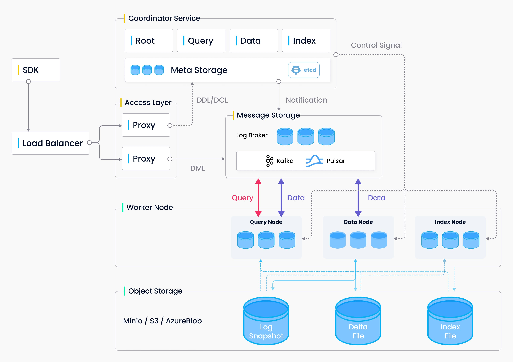
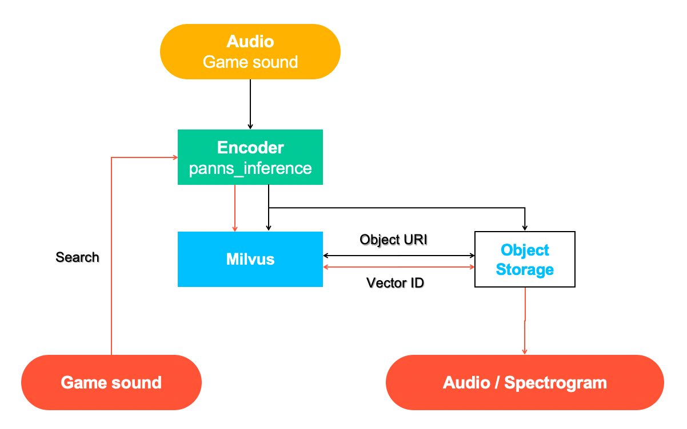
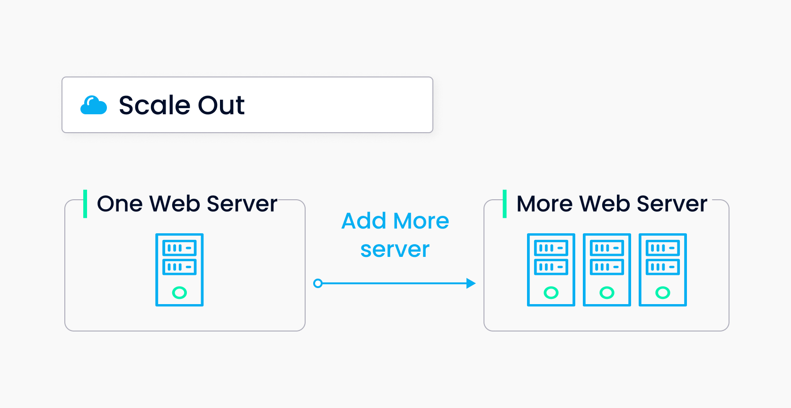
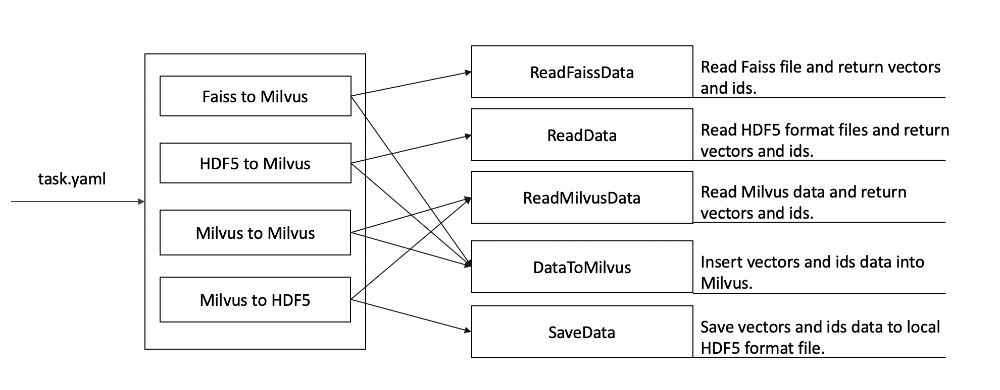
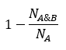
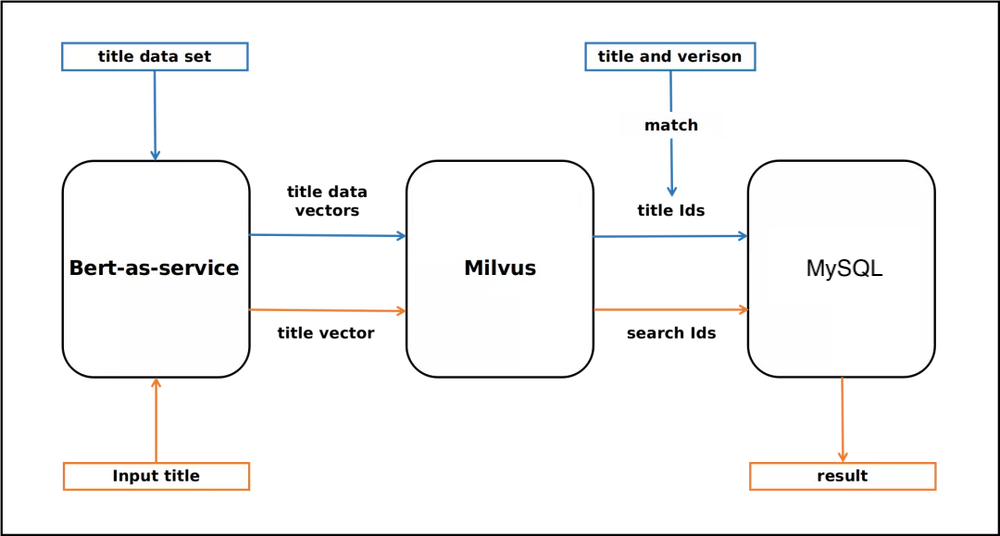

本文以问答的形式从几个维度来介绍 Milvus。通过阅读本文，你将了解 Milvus 是什么及其相关的基本原理、重要概念、核心优势、应用场景、周边工具等。此外，本文还简单介绍了 Milvus 的系统架构设计以及 Milvus 支持的索引和距离计算方式。
Milvus 于 2019 年开源，主要用于存储、索引和管理通过深度神经网络和机器学习模型产生的海量向量数据。
Milvus 向量数据库专为向量查询与检索设计，能够为万亿级向量数据建立索引。与传统关系型数据库不同，Milvus 主要用于自下而上地处理非结构化数据向量。非结构化数据没有统一的预定义模型，因此可以转化为向量。
随着互联网不断发展，电子邮件、论文、物联网传感数据、社交媒体照片、蛋白质分子结构等非结构化数据已经变得越来越普遍。如果想要使用计算机来处理这些数据，需要使用 embedding 技术将这些数据转化为向量。随后，Milvus 会存储这些向量，并为其建立索引。Milvus 能够根据两个向量之间的距离来分析他们的相关性。如果两个向量十分相似，这说明向量所代表的源数据也十分相似。
如果你刚刚接触向量数据库及向量相似度检索领域，可以通过阅读以下重要概念获得初步了解。
更多 Milvus 相关概念详见 Milvus 术语表。
非结构化数据指的是数据结构不规则，没有统一的预定义数据模型，不方便用数据库二维逻辑表来表现的数据。非结构化数据包括图片、视频、音频、自然语言等，占所有数据总量的 80%。非结构化数据的处理可以通过各种人工智能（AI）或机器学习（ML）模型转化为向量数据进行。
向量又称为 embedding vector，是指由embedding技术从离散变量（如xxx等各种非结构化数据）转变而来的连续向量。在数学表示上，向量是一个由浮点数或者二值型数据组成的 n 维数组。通过现代的向量转化技术，比如各种人工智能（AI）或者机器学习（ML）模型，可以将非结构化数据抽象为 n 维特征向量空间的向量。这样就可以采用最近邻算法（ANN）计算非结构化数据之间的相似度。
相似度检索是指将目标对象与数据库中数据进行比对，并召回最相似的结果。同理，向量相似度检索返回的是最相似的向量数据。近似最近邻搜索（ANN）算法能够计算向量之间的距离，从而提升向量相似度检索的速度。如果两条向量十分相似，这就意味着他们所代表的源数据也十分相似。
创建索引是一个组织数据的过程，是向量数据库实现快速查询百万、十亿、甚至万亿级数据集所依赖的一个巨大组成部分。在查询或检索数据前，必须先指定索引类型及距离计算公式。如未指定索引类型，Milvus 将默认执行暴搜。
Milvus 目前支持的向量索引类型大都属于 ANNS（Approximate Nearest Neighbors Search，近似最近邻搜索）。
更多内容详见根据应用场景选择索引。
Milvus 基于不同的距离计算方式比较向量间的距离。根据插入数据的形式，选择合适的距离计算方式能极大地提高数据分类和聚类性能。
浮点型向量主要使用以下距离计算公式：
更多内容详见 距离计算方式。
你可以使用 Milvus 搭建符合自己场景需求的向量相似度检索系统。Milvus 使用场景包括：
更多应用场景详见 Milvus 系统搭建教程及 Milvus 用户。
Milvus 2.0 是一款云原生向量数据库，采用存储与计算分离的架构设计，所有组件均为无状态组件，极大地增强了系统弹性和灵活性。
整个系统分为四个层面：
更多系统原理的相关内容详见 系统架构。

Milvus 为 DevOps 提供丰富的 API 及工具。
Milvus 客户端库对 Milvus API 进行了封装。你可以使用 Milvus 客户端库通过应用代码进行数据插入、删除、查询等操作。
我们正在不断开发新的客户端库。如果你愿意为 Milvus 贡献代码，请前往相应的 Milvus 项目 仓库。
Milvus 生态系统提供多种强大的工具，包括：
为获得最佳使用体验，我们强烈建议启用最新版本的 Milvus。
围绕以下三个理念，我们重新定义下一代云原生向量数据库：
云原生优先： 我们认为，只有存储计算分离的架构才能发挥云的弹性，实现按需扩容的模式。另一个值得注意是 Milvus 2.0 采取了读写分离、实时离线分离、计算瓶颈/内存瓶颈/IO 瓶颈分离的微服务化设计模式，这有助于我们面对复杂的工作负载选择最佳的资源配比。
日志即数据（log as data）： Milvus 引入消息存储作为系统的骨架，数据的插入修改只通过消息存储交互，执行节点通过订阅消息流（publish/subscribe）来执行数据库的增删改查操作。这一设计的优势在于降低了系统的复杂度，将数据库关键的持久化和闪回等能力都下钻到存储层；另一方面，日志订阅机制提供了极大的灵活性，为系统未来的拓展奠定了基础。
批流一体： Milvus 2.0 实现了 unified Lambda 流式处理架构，增量数据和离线数据一体化处理。相比 Kappa 架构，Milvus 引入对日志流的批量计算将日志快照和构建索引存入对象存储，这大大提高了故障恢复速度和查询效率。为了将无界的流式数据拆分成有界的窗口，Milvus 采用 watermark 机制，通过写入时间（也可以是事件发生时间）将数据切分为多个小的处理单元（message pack），并维护了一条时间轴便于用户基于某个时间点进行查询。
Milvus 2.0 作为一款开源分布式向量数据库产品，始终将产品的易用性放在系统设计的第一优先级。一款数据库的使用成本不仅包含了运行态的资源消耗成本，也包含了运维成本和接入学习成本。Milvus 新版本支持了大量降低用户使用成本的功能。
实现数据的可靠存储和可持续的服务是对数据库产品的基本要求。我们的理念是 Fail cheap, fail small, fail often。Fail cheap 指的是 Milvus 采取的存储计算分离架构，节点失败恢复的处理十分简单，且代价很低。Fail small 指的是 Milvus 采取分而治之的思想，每个协调服务仅处理读/写/增量/历史数据中的一个部分，设计被大大简化。Fail often 指的是混沌测试的引入，通过故障注入模拟硬件异常、依赖失效等场景，加速问题在测试环境被发现的概率。
为了解决结构化数据和非结构化数据的割裂问题，Milvus 2.0 支持标量存储和向量标量混合查询。混合查询帮助用户找出符合过滤表达式的近似邻，目前 Milvus 支持等于、大于、小于等关系运算以及 NOT、AND、OR 、IN 等逻辑运算。
Milvus 2.0 是基于消息存储构建的分布式数据库，遵循 PACELC 定理所定义的，必须在一致性和可用性/延迟之间进行取舍。绝大多数 Milvus 场景在生产中不应过分关注数据一致性的问题，原因是接受少量数据不可见对整体召回率(Recall)的影响极小，但对于性能的提升帮助很大。尽管如此，我们认为强一致性(Strong)、有界一致性(Bounded Staleness)、会话一致性(Session) 等一致性保障语义依然有其独特的应用场景。比如，在功能测试场景下，用户可能期待使用强一致语义保证测试结果的正确性，因此Milvus支持请求级别的可调一致性级别。
数据工程师经常会因为脏数据、代码逻辑等问题需要回滚数据。传统的数据库通常通过快照方式来实现数据回滚，有时甚至需要重新训练，带来高昂的额外开销和维护成本。Milvus 对所有数据增删操作维护了一条时间轴，用户查询时可以指定时间戳以获取某个时间点之前的数据视图。基于 Time Travel，Milvus 还可以很轻量地实现备份和数据克隆功能。
对象关系映射（object relational mapping，ORM）技术使用户更加关注于业务模型而非底层的数据模型，便于开发者维护表、字段与程序之间的关联关系。为了弥补 AI 算法概念验证（Proof of concept）到实际生产部署之间的缺口，我们设计了对象关系映射 Python Milvus API，而其背后的实现可以是通过嵌入式的 library、单机部署、分布式集群，也可能是云服务。通过统一的 API 提供一致的使用体验，避免云端两侧重复开发、测试与上线效果不一致等问题。
Milvus Insight 是 Milvus 图形化管理界面，包含了集群状态可视化、元数据管理、数据查询等实用功能。Milvus Insight 源码也会作为独立项目开源，期待有更多感兴趣的人加入共同建设。
Milvus CLI 是基于 PyMilvus 的 Milvus 命令行界面，支持连接服务器、数据操作和数据导出/导入。
支持基于 helm 和 docker-compose 的一键部署。
Milvus 2.0 使用开源时序数据库 Prometheus 存储性能和监控数据，同时依赖 Grafana 进行指标展示。
| Milvus 2.0 | Milvus 1.x | |
|---|---|---|
| 架构 | 云原生 | 共享存储 |
| 可扩展性 | 500+ 个节点 | 1 - 32 个读节点，1 个写节点 |
| 持久性 | ||
| 可用性 | 99.9% | 99% |
| 数据一致性 | 多种一致性 |
最终一致 |
| 数据类型支持 | 向量数据 | |
| 基本操作 | ||
| 高级功能 | ||
| 索引类型 | ||
| SDK | ||
| 当前状态 | 预览版本。预计 2021 年底发布稳定版本。 | 长期支持（LTS）版本 |
Milvus 的全球企业用户超过 1000，应用领域十分广泛。以下是在开发中使用了 Milvus 的用户列表。
| 公司 | 行业 | 用户案例 |
|---|---|---|
| 百度飞桨 (PaddlePaddle) | 深度学习 | 强强联手！Milvus 与 PaddlePaddle 深度整合，赋能工业级 AI 应用 |
| Vova | 跨境电商 | 基于 Milvus 的 VOVA 拍照购实践 |
| Opera | 浏览器 | 相似视频搜索—Opera 的 Milvus 实践 |
| 趋势科技 | 信息技术 | Milvus 在趋势科技的实践 |
| 知擎者 | 商标注册 | 图形商标近似检索-知擎者的 Milvus 实践 |
| 搜狐 | 互联网 | 基于语义向量的内容召回和短文本分类的错误查找-搜狐的 Milvus 实战 |
| 格像科技 | 互联网 | 基于 Milvus 构建的近似最近邻（ANN）搜索引擎 |
| 神州泰岳 | 信息技术 | 我的机器人新同事 |
| 汽车之家 | 汽车网站 | 相似问答检索——汽车之家的 Milvus 实践 |
| 不亦乐乎科技 | 音乐、科技 | 让音乐伴随你左右-Milvus 在丸音的应用 |
| 爱云动 | 运动、科技 | 我在哪？让 Milvus 给你答案—爱云动的 Milvus 实践 |
| 蓝灯鱼智能科技 | 人工智能、专利、商标 | 蓝灯鱼 AI 专利检索在 Milvus 的实践 |
| 焦点科技 | 互联网 | 垃圾询盘过滤，焦点科技的 Milvus 实践 |
| 小米 | 移动互联网 | 信息推流，小米浏览器的Milvus实践 |
| 贝壳 | 房地产 | AI 搜房，贝壳找房的Milvus实践 |
| 云从科技 | 硬件/软件、信息服务 | Milvus在云从的深度实践 |
| Lucidworks | 信息技术 | Milvus x Lucidworks 快速构建语义检索 |
| 唯品会 | 电商 | Milvus 在唯品会搜索推荐的实践 |
| Tokopedia | 电商 | Milvus 在 Tokopedia 的应用 ｜ 让语义搜索更加智能 |
| Juicedata | 软件 | 基于 JuiceFS 搭建 Milvus 分布式集群 |
| 惠普 | 信息科技 | 解决非结构化数据搜索的难题 |
| KubeSphere | 开源分布式操作系统 | |
| 丁香园 | 医学、互联网 | |
| 魔橙互联 | 游戏 | |
| 飞书深诺集团 | 营销 | 千万量级图片视频快速检索，轻松配置设计师的灵感挖掘神器 |
| 妙医佳健康科技集团 | 健康科技 | 结合 Milvus 的医疗问答辅助标记平台 |
| 思必驰 | 科技 | |
| 美的 | 消费电器 | |
| 有赞 | 零售科技 | |
| 陌陌 | 社交 | |
| 涂鸦智能 | 软件 |
本页介绍了未来发布的 Milvus 版本将提供的新增功能和优化升级以及 Milvus 项目的长期目标。本页内容由用户优先级驱动，并可能随着他们的要求或需求的变化而变化。

| 版本 | 功能 | Owner | 进度 | 备注 |
|---|---|---|---|---|
| 2.0.0-RC | 支持数字类型的标量数据 | 已完成 | ||
| 2.0 | 增加字符串数据类型 | czs007, dragondriver | 开发中 | |
| 2.0 | Collection 别名 | lsgrep | 开发中 | |
| 2.1 | 对于字符串及数字的数据类型支持倒排索引或标量比特图 | 待指派 | ||
| 2.1 | 支持数据生命周期管理 | 待指派 | ||
| 2.1 | 数据自动分区 | 待指派 | ||
| 2.2 | 支持 Collection 重命名 | 待指派 |
| 版本 | 功能 | Owner | 进度 | 备注 |
|---|---|---|---|---|
| 2.0.0-RC | 支持标量字段过滤 | 已完成 | ||
| 2.0.0-RC | 支持根据 ID 查询数据 | 已完成 | ||
| 2.0 | 支持根据表达式（predicate expression）查询数据 | fishpenguin/FluorineDog | 开发中 | |
| 2.0 | 支持根据 ID 删除数据 | scsven | 开发中 | |
| 2.1 | 支持根据 ID 查询数据 | 待指派 | ||
| 2.1 | 返回符合距离限制的全部向量。 | 待指派 | ||
| 2.2 | 对检索或查询结果进行分页 | 待指派 | ||
| 2.2 | 在插入及更新数据时进行主键去重 | 待指派 |
| 版本 | 功能 | Owner | 进度 | 备注 |
|---|---|---|---|---|
| 2.0.0-RC | 支持回溯（time travel）访问历史数据。 | 已完成 | ||
| 2.0.0-RC | 提供四个级别的一致性，分别是：strong、bounded staleness、session、consistent prefix。 | 已完成 | ||
| 2.0 | Segment compaction | sunby | 开发中 | |
| 2.0 | 实现动态负载均衡 | sunby, xige-16 | 开发中 | |
| 2.0 | 增量 Segment 到存量 Segment 的动态切换 | xige-16, bigsheeper | 开发中 | |
| 2.0 | 向量距离计算 | 已完成 | ||
| 2.1 | 提供用户自定义的embedding服务 | 待指派 | ||
| 2.2 | 支持变更数据捕获 | 待指派 | ||
| 长期 | 采用增量备份 | 待指派 | ||
| 长期 | 支持静态数据加密 | 待指派 | ||
| 长期 | 通过数据导入及转换实现 embedding-as-service 服务 | 待指派 |
| 版本 | 功能 | Owner | 进度 | 备注 |
|---|---|---|---|---|
| 2.0 | Milvus 2.0 性能基准测试及性能调优 | czs007, dragondriver | 开发中 | |
| 2.1 | 支持使用 GPU 建索引及向量召回 | shengjun1985 | 开发中 | |
| 2.1 | 批量导入数据 | 待指派 | ||
| 2.1 | 采用基于代价的优化查询算法，提高查询效率 | 待指派 | ||
| 2.1 | 支持 ScaNN 索引类型 | 待指派 | ||
| 2.2 | 支持基于磁盘的向量索引 | 待指派 | ||
| 长期 | 支持 FPGA 及其他异构计算硬件设备 | 待指派 | ||
| 长期 | 自动索引优化 | 待指派 |
| 版本 | 功能 | Owner | 进度 | 备注 |
|---|---|---|---|---|
| 2.0.0-RC | 全托管故障恢复及服务发现 | 已完成 | ||
| 2.0.0-RC | Python SDK 测试 | 已完成 | ||
| 2.0 | 混沌测试 | yanliang567 | 开发中 | |
| 2.0 | 压力测试 | del-zhenwu | 开发中 | |
| 2.1 | 支持 Segment 多内存副本 | 待指派 | ||
| 2.1 | 支持流控及背压 | 待指派 | ||
| 2.2 | 查询节点资源隔离 | 待指派 |
| 版本 | 功能 | Owner | 进度 | 备注 |
|---|---|---|---|---|
| 2.0.0-RC | 使用 Helm 安装 Milvus | 已完成 | ||
| 2.0.0-RC | 提供 Milvus 可视化管理工具 Milvus Insight | 优化中 | ||
| 2.0 | 支持 Prometheus、Grafana 及 Jaeger | zwd1208 | 文档编写中 | |
| 2.0 | Milvus Kubernetes Operator | zwd1208, jeffoverflow | 开发中 | |
| 2.1 | 多机房多地部署，多云融合 | 待指派 | ||
| 2.2 | 提供可在笔记本电脑上运行的内嵌式 Milvus | 待指派 | ||
| 长期 | 分布式集群动态扩缩容 | 待指派 |
| 版本 | 功能 | Owner | 进度 | 备注 |
|---|---|---|---|---|
| 2.0.0-RC | 提供基于对象关系映射（Obejct Relational Mapping）抽象的 API | 已完成 | ||
| 2.0 | 合并 PyMilvus ORM 及 PyMilvus | 已完成 | ||
| 2.0 | 支持 NodeJs 语言的 SDK | 已完成 | ||
| 2.0 | 支持 Java 语言的 SDK | xiaofan-luan | 开发中 | |
| 2.0 | 支持 Go 语言的 SDK | congqixia | 开发中 | |
| 2.1 | 支持 Restful 语言的 API | 待指派 | ||
| 2.1 | 支持 C++ 语言的 SDK | 待指派 | ||
| 长期 | SQL-like 查询语言 | 待指派 |
| 版本 | 功能 | Owner | 进度 | 备注 |
|---|---|---|---|---|
| 2.0 | 集成 S3 | 已完成 | ||
| 2.1 | 集成 Kafka | 待指派 | ||
| 2.1 | 集成 JuiceFS | 待指派 | ||
| 2.1 | 本地或分布式文件系统存储数据 | 待指派 | ||
| 2.2 | 集成 HBase、TiKV、FoundationDB等分布式键-值存储（KV store）系统 | 待指派 |
Milvus 致力于为用户提供性能最佳的向量数据库，方便用户将其运用到 AI 场景中或进行向量相似度搜索。Milvus 团队不断努力增添新功能以提升用户体验。本文列举了用户在使用 Milvus 时可能会遇到的一些使用限制。
| 标识符类型 | 最大长度（字符） |
|---|---|
| Collection | 255 |
| Field | 255 |
| Index | 255 |
| Partition | 255 |
标识符中仅能包含数字、字母、美元符号（$）、下划线（_）。标识符中第一个字符必须为字母或者下划线。
| 标识符类型 | 最大值 |
|---|---|
| Collections | 65536 |
| Connections / proxy | 65536 |
| 类型 | 最大数量 |
|---|---|
| Partitions | 4096 |
| Shards | 256 |
| Fields | 256 |
| Indexes | 65536 |
| Entities | unlimited |
| 类型 | 最大长度（字符） |
|---|---|
| VARCHAR | 65535 |
| 属性 | 最大值 |
|---|---|
| 维度 | 32768 |
| 操作 | 数据量（MB） |
|---|---|
| 插入 | 512 |
| 检索 | 512 |
| 查询 | 512 |
在当前版本中，加载数据最大值不能超过所有 query node 内存总量的 70%，从而为执行引擎预留内存资源。
| 参数 | 最大值 |
|---|---|
| Top K | 16384 |
| nq | 16384 |
TopK 设为最大值（16384）。Milvus 2.0.0 正式版将解除这一限制。
发布时间：2021-10-11
| Milvus 版本 | Python SDK 版本 | Java SDK 版本 | Go SDK 版本 | Node SDK 版本 |
|---|---|---|---|---|
| 2.0.0-RC7 | 2.0.0rc7 | 即将上线 | 即将上线 | 1.0.18 |
Milvus 2.0.0-RC7 是 2.0.0-GA 的预览版本。该版本支持 collection 别名，PChannel 共享 msgstream，将默认 MinIO 与 Pulsar 依赖更改为分布式版本，并修复了一系列资源泄露、死锁等问题。
由于对存储格式进行了一些更改，Milvus 2.0.0-RC7 与早先的 RC 版本不兼容。
#8215 为 query coord 中 interTask 添加最大重试次数。
#9459 实现 collection 起始位置。
#8721 为日志名称添加节点 ID。
#8940 将流式 segment 内存添加到 checkLoadMemory 中的已用内存。
#8542 使用 proto.Marshal 替换 proto.MarshalTextString。
#8770 重构 flowgraph 以及相关调用。
#8666 更改 CMake 版本。
#8653 更新 getCompareOpType。
#8608 更改 segment 副本结构。
#8565 重构缓存大小计算。
#8262 添加 segcore 日志记录器。
#8138 在 insertBufferNode 中添加 BufferData。
#7738 实现通过 msgstream 池为创建 collection 分配 msgstream。
#8054 优化 insertBufferNode 代码。
#7909 升级 pulsar-client-go 至 0.6.0 版本。
#7913 转移 segcore rows_per_chunk 配置项至 query_node.yaml。
#7792 从 LongTermChecker 中删除 ctx。
#9269 优化表达式写法。
#8159 修改 FlushSegments 为异步。
#8278 重构 rocksmq 关闭逻辑并优化代码覆盖率。
#7797 标注代码参数类型。
#9579 在 getSystemInfoMetrics 中添加副本缓存大小以及 cacheSize 。
#9556 添加 ProduceMark 接口以返回 message ID。
#9554 添加 LoadPartial 接口以支持 DataKV。
#9471 支持通过 collection ID 调用 DescribeCollection。
#9451 将 index 参数存储至 descriptor event。
#8574 为搜索功能添加 round_decimal 参数以控制精度。
#8947 Rocksmq 支持 SubscriptionPositionLatest。
#8919 索引文件过大时，拆分为多行字符串。
#8914 Binlog 解析器工具支持索引文件。
#8514 重构索引文件格式。
#8765 添加 cacheSize 以防止 query node 内存资源不足。
#8673 #8420 #8212 #8272 #8166 支持多个 Milvus 集群共享 Pulsar 以及 MinIO。
#8654 为 Msgstream 添加 BroadcastMark 以返回 Message ID。
#8586 将 message ID 返回值添加至 producer 中。
#8264 添加 description event 附加内容。
#8341 在 root coord 中使用 Marshal 替代 MarshalTextString。
#8228 支持 healthz 检测 API。
#8276 初始化 index node 时初始化 SIMD 类型。
#7967 添加 knowhere.yaml 以支持配置 knowhere。
#7974 支持设定任务队列最大任务数。
#7942 支持配置 SIMD 类型。
#7814 在搜索以及结构化匹配中支持布尔值过滤器。
#7635 支持通过配置文件设定 segcore rows_per_chunk。
#9572 调用 DeleteRange 后 Rocksdb 不删除 end key。
#8735 Acked 信息占用内存资源。
#9454 Query service 发生数据竞争。
#8850 使用别名删除 collection 时，SDK 报错。
#8930 由于从 insertBuf 中即时删除缓冲，导致当 SaveBinlogPath 调用失败时，flush 偶尔会卡住。
#8868 跟踪日志捕获错误的文件名和行号。
#8844 SearchTask 返回结果为空。
#8835 应 pulsar-client-go 存在 bug 导致 Root coord 崩溃。
#8744 Rocksdb_kv 错误进程。
#8752 mqconsumer 中发生数据竞争。
#8686 Auto-flush 之后 flush 无法完成。
#8671 调用删除之后对象没有被从 MinIO 中删除。
#8137 因为 TSO 没有加载最新时间戳导致时间倒退。
#8461 Data coord 中可能发生数据竞争。
#8386 为 data node 分配 dm channel 的逻辑不完整。
#8206 Proxy 搜索任务中结果合并算法错误。
#8120 Root coord 中可能发生数据竞争。
#8068 当查询结果为空且 retrieve_ret_ 未被初始化时，query node 崩溃。
#8060 查询任务崩溃。
#8091 Proxy gRPC 客户端发生数据竞争。
#8078 Root coord gRPC 客户端发生数据竞争。
#7730 CloseRocksMQ 后 topic 和 ConsumerGroup 仍然存在。
#8188 释放 collection 逻辑错误。
发布时间：2021-09-10
| Milvus 版本 | Python SDK 版本 | Java SDK 版本 | Go SDK 版本 | Node SDK 版本 |
|---|---|---|---|---|
| 2.0.0-RC6 | 2.0.0rc6 | 即将上线 | 即将上线 | 1.0.18 |
Milvus 2.0.0-RC6 是 2.0.0 的预览版本。该版本支持创建 collection 时设定 shard 数量，以及通过表达式进行结构性匹配。 RC5 通过 API 进一步暴露分布式版指标。 在该版本我们增加单元测试覆盖率至 80%，并修复了一系列资源泄露、系统错误等问题。
MqMsgStream 查找逻辑错误。knowhere 中数据集内存泄漏。MqMsgStream 广播失败时可能出现死锁。发布时间：2021-08-30
| Milvus 版本 | Python SDK 版本 | Java SDK 版本 | Go SDK 版本 | Node SDK 版本 |
|---|---|---|---|---|
| 2.0.0-RC5 | 2.0.0rc5 | 即将上线 | 即将上线 | 1.0.18 |
Milvus 2.0.0-RC5 是 2.0.0 的预览版本。该版本支持 message queue 数据保留机制和 etcd 数据清理，通过 API 暴露分布式版指标，并为后续支持删除操作做准备。 RC5 在系统稳定性方面也取得了很大的进步。 该版本修复了一系列资源泄露、操作卡死、 以及 Milvus 集群下单机 Pulsar 的配置错误等问题。
SegmentInfo 中保存 binlog 路径。RetrieveRequest 和 RetrieveTask。NewEtcdKV API.fmt.Println 。delete API。DropCollection 导致 data node flowgraph 不关闭。calc_distance 会返回错误的二元向量结果。msgStream 可能会卡住。loadSegmentInternal 失败时，query node 不会向 query coord 返回错误。topk 大于 row_num. 时，query node 返回错误的 ID。cache 内存泄露。queryCollection 时 collection 为空。发布时间：2021-08-13
| Milvus 版本 | Python SDK 版本 | Java SDK 版本 | Go SDK 版本 |
|---|---|---|---|
| 2.0.0-RC4 | 2.0.0rc4 | 即将上线 | 即将上线 |
Milvus 2.0.0-RC4 是 2.0.0 的预览版本。该版本主要修复了稳定性问题，并新增从对象存储中检索向量数据以及通过通配符匹配指定输出 field 的功能。
#6859 提升 gRPC 客户端 MaxCallRecvMsgSize 和 MaxCallSendMsgSize 的上限。
#6796 修复 MsgStream 指数重试策略。
#6897 #6899 #6681 #6766 #6768 #6597 #6501 #6477 #6478 #6935 #6871 #6671 #6682 优化日志系统。
#6440 重构 segment manager。
#6421 创建索引时将原始向量拆分为几个较小的 binlog 文件。
#6466 区分 query 和 search 的概念和使用。
#6505 将 RetrieveRequest 中 output_fields 修改为 out_fields_id 。
#6427 重构 index coord 的任务分配逻辑。
#6629 为 etcdKV 添加 WatchWithVersion 接口。
#6666 重构 expression executor 以使用单个 bitset。
#6664 当分配的行数超过每个 segment 的最大行数时，自动创建新 segment。
#6786 重构 RangeExpr 和 CompareExpr.
#6497 放宽二元向量 field 搜索时的维度下限。
#6706 支持从磁盘读取向量。
#5210 扩展布尔表达式的语法。
#6464 添加向量 chunk manager 以支持向量文件本地存储。
#6701 为通过 Docker Compose 部署的 Milvus 添加数据持久化支持。
#6767 为 Milvus 添加 Grafana 仪表盘 .json 文件。
#5443 从 collection 中获取向量时，CalcDistance 返回错误的结果。
#7004 Pulsar 消费者导致 goroutine 泄漏。
#6946 当 Flow Graph 在 start() 之后立即 close() 时，会发生数据竞争。
#6903 在 query coord 中使用 proto marshal 以替代 marshalTextString 来避免由未知 field 名称崩溃触发的崩溃。
#6977 删除 partition/collection 后，搜索返回错误限制。
#6943 MinIOKV GetObject 方法不会关闭客户端并导致每次调用产生 goroutine 泄漏。
#6370 因加载 partition 提供的错误语义导致搜索卡住。
#6831 Data node 在元服务中崩溃。
#6469 当限制（topK）大于插入 entity 的数量时，使用汉明距离搜索二进制结果错误。
#6693 因超时引起的 segment 竞争情况。
#6097 短时间内频繁重启 query node 后导致加载卡住。
#6464 处理 Data sorter 边界情况。
#6419 Milvus 在插入空向量时崩溃。
#6477 不同的组件在 MinIO 中重复创建桶。
#6377 在部署了多个 query node 的情况下，由于从 etcd 获取的 globalSealedSegment 信息不正确导致 Milvus 集群查询结果返回不完整。
#6499 TSO 分配错误的时间戳。
#6501 Data node 崩溃后 channel 丢失。
#6527 无法从 etcd 中删除 watchQueryChannels 的任务信息。
#6655 调用检索任务时 proxy 崩溃。
#6762 Collection/partition 的创建时间戳不正确。
#6644 Data node 自动重启失败。
#6641 与 etcd 断开连接时无法停止 data coord。
#6621 在插入的数据大小大于 segment 时，Milvus 抛出异常。
#6732 创建 IVF-PQ 索引失败。
发布时间: 2021-07-13
| Milvus 版本 | Python SDK 版本 | Java SDK 版本 | Go SDK 版本 |
|---|---|---|---|
| 2.0.0-RC2 | 2.0.0rc2 | 即将上线 | 即将上线 |
Milvus 2.0.0-RC2 是 2.0.0 的预览版本。该版本修复了 RC1 版本的稳定性和性能问题，并针对节点和存储管理进行了代码重构。
SegmentIndexInfo 新增 collectionID 和 partitionID 信息。releaseCollection() 方法时清除 proxy 中对应的 searchMsgStream。fget_object() 方法从 MinIO 加载文件到本地设备。GetFlushedSegments() 方法。GetIndexStates() 方法。发布时间：2021-06-28
| Milvus 版本 | Python SDK 版本 | Java SDK 版本 | Go SDK 版本 |
|---|---|---|---|
| 2.0.0-RC1 | 2.0.0rc1 | 即将上线 | 即将上线 |
Milvus 2.0.0-RC1 是 2.0.0 的预览版本。 该版本引入 Go 语言搭建分布式系统，并采用了新的云原生分布式设计。 后者大大提高了系统扩展性和系统弹性。
Milvus 2.0 是一款云原生向量数据库，采用存储与计算分离的架构设计。该重构版本的所有组件均为无状态组件，极大地增强了系统弹性和灵活性。
整个系统分为四个层面：
接入层Access Layer：系统的门面，包含了一组对等的 proxy 节点。接入层是暴露给用户的统一 endpoint，负责转发请求并收集执行结果。
协调服务（Coordinator Service）：系统的大脑，负责分配任务给执行节点。总共有四类协调者角色，分别为 root 协调者、data 协调者、query 协调者和 index 协调者。
执行节点（Worker Node）： 系统的四肢。执行节点只负责被动执行协调服务发起的读写请求。目前有三类执行节点，即 data 节点、query 节点和 index 节点。
存储服务（Storage）： 系统的骨骼，是所有其他功能实现的基础。Milvus 依赖三类存储：元数据存储、消息存储（Log Broker）和对象存储。
更多系统原理的相关内容详见 Milvus 2.0 架构。
SDK
PyMilvus
PyMilvus API 直接在 collection、partion 和 index 对象上进行操作。用户可专注于搭建业务数据模型，而不必担心具体实现。
核心功能
标量和向量数据混合查询
Milvus 2.0 支持存储标量数据。支持使用大于、小于、等于、NOT、IN、AND、OR 等运算符在向量搜索之前进行标量过滤。 当前支持的数据类型包括 bool、int8、int16、int32、int64、float 和 double。 后期版本将逐步支持字符串和 VARBINARY 数据类型。
匹配查询（Match Query）
与返回相似结果的搜索操作不同，匹配查询操作返回完全匹配表达式的对象，可用于按 ID 或按搜索条件查询向量。
多一致性
分布式数据库需在一致性与可用性以及一致性与延迟之间进行权衡。 Milvus 提供四种一致性级别，从强到弱分别为：强一致性(Strong)、有界一致性(Bounded Staleness)、会话一致性(Session) 、前缀一致性（Consistent Prefix)。 用户可以通过指定时间戳自定义读取一致性。 一般情况下，一致性级别越弱，可用性越高，性能也越好。
时间旅行（Time Travel）
通过时间旅行可以访问指定时间段内任意时刻的历史数据。用户可使用该功能查询、恢复和备份历史数据。
其他
支持基于 helm 和 docker-compose 一键部署 Milvus 2.0。
使用 Prometheus 和 Grafana 实现数据监测和报警功能。
Milvus Insight
Milvus Insight 是 Milvus 图形化管理工具，包含了集群状态可视化、元数据管理、数据查询等实用功能。Milvus Insight 源码未来也会作为独立项目开源。
Milvus 2.0 使用的编程语言、数据格式以及分布式架构都与之前的版本完全不同，这意味着不能从之前的 Milvus 版本升级到 2.x 版本。不过，Milvus 1.x 是长期支持版本（LTS），相关的数据迁移工具将尽快上线。
具体改动如下：
暂不支持 JAVA、Go 和 C++ SDK。
暂不支持删除和更新操作。
PyMilvus 不支持 force flush。
数据格式与之前版本不兼容。
废弃 Mishards —— Milvus 2.0 为分布式架构，无需分片中间件。
暂不支持本地文件存储和分布式系统存储。
安装前请先检查你的软件及硬件设备是否满足 Milvus 安装要求。
Milvus 在构建索引和查询向量时依赖 CPU 对 SIMD (Single Instruction Multiple Data) 扩展指令集合的支持。请确保运行 Milvus 的 CPU 至少支持以下一种 SIMD 指令集合：
使用 lscpu 命令以检查 CPU 是否支持特定 SIMD 指令集合：
lscpu | grep -e sse4_2 -e avx -e avx2 -e avx512
参考 Wikipedia AVX 指令集 了解更多细节。
$ sudo docker info 确认 Docker 版本。建议使用 19.03 或以上版本。$ sudo docker-compose version 确认 Docker Compose 版本。建议使用 1.25.1 或以上版本。| 操作系统 | 安装要求 |
|---|---|
| macOS | 安装 Mac 版本 Docker，详见安装说明. 注意： 我们推荐在 Docker 虚拟机中至少设置 2 个虚拟 CPU 及 8 GB 初始内存，否则安装可能失败。 注意： Milvus 暂不支持 Apple M1 CPU. |
| Linux 系统本地安装 Docker | 安装 Linux 版本 Docker，详见安装说明。 |
| Windows 系统安装 Docker Desktop WSL2 后台 | 安装 Windows 版本 Docker，详见安装说明。 源码必须保存在本地 Linux 文件系统中，而非 Windows 挂载远程文件系统 /mnt/c 中。 |
你可以使用 Docker Compose 或 Kubernetes 安装 Milvus 单机版。安装前，请先阅读安装前提。
你也可以从源代码编译 Milvus。
wget https://github.com/milvus-io/milvus/releases/download/v2.0.0-rc8/milvus-standalone-docker-compose.yml -O docker-compose.yml
你可以在 GitHub 直接 下载 docker-compose.yml。
$ export DOCKER_VOLUME_DIRECTORY=。
$ docker-compose up -d
Docker Compose is now in the Docker CLI, try `docker compose up`
Creating milvus-etcd ... done
Creating milvus-minio ... done
Creating milvus-standalone ... done
如果 Milvus 单机版启动正常，可以看到有 3 个 Docker 容器在运行（2 个为基础服务，1 个为 Milvus 服务）：
$ sudo docker-compose ps
Name Command State Ports
----------------------------------------------------------------------------------------------------------------
milvus-etcd etcd -listen-peer-urls=htt ... Up (healthy) 2379/tcp, 2380/tcp
milvus-minio /usr/bin/docker-entrypoint ... Up (healthy) 9000/tcp
milvus-standalone /tini -- milvus run standalone Up 0.0.0.0:19530->19530/tcp,:::19530->19530/tcp
$ sudo docker-compose down 停止 Milvus 单机版。
如果你想在停止Milvus后清理数据，运行 $ sudo rm -rf volume。
你可以使用 Docker Compose 或 Kubernetes 安装 Milvus 分布式版。安装前，请先阅读安装前提。
你也可以从源代码编译 Milvus。
$ wget https://github.com/milvus-io/milvus/releases/download/v2.0.0-rc8/milvus-cluster-docker-compose.yml -O docker-compose.yml
你可以在 GitHub 直接 下载 docker-compose.yml。
$ export DOCKER_VOLUME_DIRECTORY=。
$ docker-compose up -d
Docker Compose is now in the Docker CLI, try `docker compose up`
Creating milvus-etcd ... done
Creating milvus-minio ... done
Creating milvus-pulsar ... done
Creating milvus-proxy ... done
Creating milvus-rootcoord ... done
Creating milvus-indexcoord ... done
Creating milvus-querycoord ... done
Creating milvus-datacoord ... done
Creating milvus-querynode ... done
Creating milvus-indexnode ... done
Creating milvus-datanode ... done
如果 Milvus 分布式版启动正常，可以看到有 11 个 docker 容器在运行（3 个为基础服务，8 个为 Milvus 服务）
$ sudo docker ps
Name Command State Ports
----------------------------------------------------------------------------------------------------------------
milvus-datacoord /tini -- milvus run datacoord Up
milvus-datanode /tini -- milvus run datanode Up
milvus-etcd etcd -listen-peer-urls=htt ... Up (healthy) 2379/tcp, 2380/tcp
milvus-indexcoord /tini -- milvus run indexcoord Up
milvus-indexnode /tini -- milvus run indexnode Up
milvus-minio /usr/bin/docker-entrypoint ... Up (healthy) 9000/tcp
milvus-proxy /tini -- milvus run proxy Up 0.0.0.0:19530->19530/tcp,:::19530->19530/tcp
milvus-pulsar bin/pulsar standalone Up
milvus-querycoord /tini -- milvus run querycoord Up
milvus-querynode /tini -- milvus run querynode Up
milvus-rootcoord /tini -- milvus run rootcoord Up
$ sudo docker-compose down 停止 Milvus 分布式版。
如果你想在停止Milvus后清理数据，运行 $ sudo rm -rf volume。
本篇文档将展示如何在离线环境中部署 Milvus。相关文件可在 GitHub 下载。
镜像加载错误可能会导致安装 Milvus 失败。离线安装 Milvus 需要拉取保存所有镜像并转移至目标主机手动加载。
wget https://raw.githubusercontent.com/milvus-io/milvus/master/deployments/docker/standalone/docker-compose.yml -O docker-compose.yml
wget https://raw.githubusercontent.com/milvus-io/milvus/master/deployments/docker/cluster/docker-compose.yml -O docker-compose.yml
pip3 install -r requirements.txt
python3 save_image.py --manifest docker-compose.yml
cd images/for image in $(find . -type f -name "*.tar.gz") ; do gunzip -c $image | docker load; done
离线安装 Milvus：
docker-compose -f docker-compose.yml up -d
卸载 Milvus：
docker-compose -f docker-compose.yml down
成功启动 Milvus 服务端后，通过 Python 示例代码使用 Milvus。
pip3 install pymilvus==2.0.0rc8
$ wget https://raw.githubusercontent.com/milvus-io/pymilvus/v2.0.0rc8/examples/hello_milvus.py
from pymilvus import connections, FieldSchema, CollectionSchema, DataType, Collection
connections.connect(host='localhost', port='19530')
dim = 128
default_fields = [
FieldSchema(name="count", dtype=DataType.INT64, is_primary=True),
FieldSchema(name="random_value", dtype=DataType.DOUBLE),
FieldSchema(name="float_vector", dtype=DataType.FLOAT_VECTOR, dim=dim)
]
default_schema = CollectionSchema(fields=default_fields, description="test collection")
print(f"\nCreate collection...")
collection = Collection(name="hello_milvus", schema=default_schema)
import random
nb = 3000
vectors = [[random.random() for _ in range(dim)] for _ in range(nb)]
collection.insert(
[
[i for i in range(nb)],
[float(random.randrange(-20,-10)) for _ in range(nb)],
vectors
]
)
default_index = {"index_type": "IVF_FLAT", "params": {"nlist": 128}, "metric_type": "L2"}
collection.create_index(field_name="float_vector", index_params=default_index)
collection.load()
topK = 5
search_params = {"metric_type": "L2", "params": {"nprobe": 10}}
#### define output_fields of search result
res = collection.search(
vectors[-2:], "float_vector", search_params, topK,
"count > 100", output_fields=["count", "random_value"]
)
根据 ID 和相似度输出搜索结果:
for raw_result in res:
for result in raw_result:
id = result.id #### result id
distance = result.distance
print(id, distance)
更多详情，参考 API Reference。
film_id 在 [2,4, 6, 8]中的 entity 进行向量相似度查询
from pymilvus import connections, Collection, FieldSchema, CollectionSchema, DataType
>>> import random
>>> connections.connect()
>>> schema = CollectionSchema([
... FieldSchema("film_id", DataType.INT64, is_primary=True),
... FieldSchema("films", dtype=DataType.FLOAT_VECTOR, dim=2)
... ])
>>> collection = Collection("test_collection_search", schema)
>>> #### insert
>>> data = [
... [i for i in range(10)],
... [[random.random() for _ in range(2)] for _ in range(10)],
... ]
>>> collection.insert(data)
>>> collection.num_entities
10
>>> collection.load()
>>> #### search
>>> search_param = {
... "data": [[1.0, 1.0]],
... "anns_field": "films",
... "param": {"metric_type": "L2"},
... "limit": 2,
... "expr": "film_id in [2,4,6,8]",
... }
>>> res = collection.search(**search_param)
>>> assert len(res) == 1
>>> hits = res[0]
>>> assert len(hits) == 2
>>> print(f"- Total hits: {len(hits)}, hits ids: {hits.ids} ")
- Total hits: 2, hits ids: [2, 4]
>>> print(f"- Top1 hit id: {hits[0].id}, distance: {hits[0].distance}, score: {hits[0].score} ")
- Top1 hit id: 2, distance: 0.10143111646175385, score: 0.101431116461
$ python3 hello_milvus.py
运行结果及查询等待时间如下：
Search...
(distance: 0.0, id: 2998) -20.0
(distance: 13.2614107131958, id: 989) -11.0
(distance: 14.489648818969727, id: 1763) -19.0
(distance: 15.295698165893555, id: 968) -20.0
(distance: 15.34445571899414, id: 2049) -19.0
(distance: 0.0, id: 2999) -12.0
(distance: 14.63361930847168, id: 1259) -13.0
(distance: 15.421361923217773, id: 2530) -15.0
(distance: 15.427900314331055, id: 600) -14.0
(distance: 15.538337707519531, id: 637) -19.0
search latency = 0.0549s
恭喜！你已成功启动 Milvus，并完成了在 Milvus上的第一次向量查询。
This topic describes how to install Milvus SDK for Milvus.
Current version of Milvus supports SDKs in Python and Node.js.
Python 3 (3.6 or later) is required.
PyMilvus is available in Python Package Index.
$ python3 -m pip install pymilvus==2.0.0rc8
If PyMilvus is correctly installed, no exception will be raised when you run the following command.
$ python -c "from pymilvus import Collection"
Having installed PyMilvus, You can:
Learn the basic operations of Milvus:
Explore PyMilvus API reference
通过本章节文档，你将了解如何连接 Milvus 服务器。
如果你选择在 Python 交互式编程环境下学习基本操作，在命令行输入 python3。
>>> from pymilvus import connections
>>> connections.connect("default", host='localhost', port='19530')
import { MilvusClient } from "@zilliz/milvus2-sdk-node";
const milvusClient = new MilvusClient("localhost:19530");
| 参数 | 说明 | 备注 |
|---|---|---|
alias* |
Milvus 服务器的名称 | 数据类型: String 必填项 |
host* |
Milvus 服务器的 IP | 必填项 |
port* |
Milvus 服务器的端口 | 必填项 |
address** |
Milvus 服务器的地址 | "server_IP:server_port"必填项 |
使用完 Milvus 的服务之后，可以断开与 Milvus 服务器的连接以释放资源：
>>> connections.disconnect("default")
await milvusClient.closeConnection();
| 参数 | 说明 | 备注 |
|---|---|---|
| alias* | Milvus 服务器的名称 | 数据类型: String 必填项 |
通过本章节文档，你将了解如何在 Milvus 中创建 collection 和 partition。
连接 Milvus 服务器后，可通过以下步骤创建 collection。
创建 collection 必须包含一列主键字段，目前主键字段只支持 int64 类型。
>>> collection_name = "example_collection"
>>> field_name = "example_field"
>>> from pymilvus import Collection, CollectionSchema, FieldSchema, DataType
>>> pk = FieldSchema(name="pk", dtype=DataType.INT64, is_primary=True, auto_id=True)
>>> field = FieldSchema(name=field_name, dtype=DataType.FLOAT_VECTOR, dim=8)
>>> schema = CollectionSchema(fields=[pk,field], description="example collection")
const COLLECTION_NAME = "example_collection";
const FIELD_NAME = "example_field";
const params = {
collection_name: COLLECTION_NAME,
fields: [
{
name: FIELD_NAME,
description: "vector field",
data_type: DataType.FloatVector,
type_params: {
dim: "8",
},
},
{
name: "age",
data_type: DataType.Int64,
autoID: true,
is_primary_key: true,
description: "",
},
],
};
| 参数 | 说明 | 备注 |
|---|---|---|
collection_name |
要建立的 collection 名称 | 数据类型: String |
field_name |
collection 中的 field 名称 | 数据类型: String |
Schema |
用于建立 collection 及其中的 field。详细说明请参考 field schema and collection schema。 | |
description |
collection 的说明 | 数据类型: String |
>>> collection = Collection(name=collection_name, schema=schema, using='default', shards_num=2)
#### 根据 collection 名称获取指定 collection。
collection=Collection(name=collection_name)
await milvusClient.collectionManager.createCollection(params);
| 参数 | 说明 | 备注 |
|---|---|---|
| using* | 在此处标明服务器名称，以指定要建立 collection 的 Milvus 服务器。 | 选填项 |
| shards_num* | 指定 collection 要建立的 shards 数目 | 选填项 |
milvus.has_collection 查看 collection 是否创建成功：>>> import pymilvus
>>> pymilvus.utility.get_connection().has_collection(collection_name)
True
await milvusClient.collectionManager.hasCollection({
collection_name: COLLECTION_NAME,
});
milvus.list_collections() 查看所有创建成功的 collection：>>> pymilvus.utility.get_connection().list_collections()
['example_collection']
await milvusClient.collectionManager.showCollections();
>>> collection.num_entities
0
await milvusClient.collectionManager.getCollectionStatistics({
collection_name: COLLECTION_NAME,
});
随着一个 collection 的数据增加，查询性能会逐渐下降。如果只需要查询一部分数据，可以考虑将数据进行分区（partitioning）。给 partition 加上 partition name 后，搜索时就只需要搜索一部分数据，从而能够提升搜索性能。
>>> partition_name = "example_partition"
>>> partition = collection.create_partition(partition_name)
await milvusClient.partitionManager.createPartition({
collection_name: COLLECTION_NAME,
partition_name: "example_partition",
});
| 参数 | 说明 | 备注 |
|---|---|---|
| partition_name | 要建立的 partition 名称 | 数据类型: String |
Milvus 会在创建 collection 时创建一个默认的 partition，name 为 _default。在创建新 partition 后，便有两个 partition——一个的 partition name 为 example_partition，另一个的为 _default 。我们可以调用 list_partitions() 的方法查看一个 collection 中的所有 partition。
>>> collection.partitions
[{"name": "_default", "description": "", "num_entities": 0}, {"name": "example_partition", "description": "", "num_entities": 0}]
await milvusClient.partitionManager.showPartitions({
collection_name: COLLECTION_NAME,
});
调用 has_partition() 查看 partition 是否创建成功:
>>> collection.has_partition(partition_name)
True
await milvusClient.partitionManager.hasPartition({
collection_name: COLLECTION_NAME,
partition_name: "example_partition",
});
你可以通过以下步骤在指定 collection 的指定 partition 中插入数据。
1.随机生成待插入的数据:
>>> import random
>>> vectors = [[random.random() for _ in range(8)] for _ in range(10)]
>>> entities = [vectors]
const entities = Array.from({ length: 10 }, () => ({
[FIELD_NAME]: Array.from({ length: 8 }, () => Math.floor(Math.random() * 10)),
}));
Milvus 将返回 MutationResult，其中包含插入数据对应的主键列 primary_keys。
>>> mr = collection.insert(entities)
#### 输出 `MutationResult` 的主键列
>>> mr.primary_keys
[425790736918318406, 425790736918318407, 425790736918318408, ...]
await milvusClient.dataManager.insert({{
collection_name: COLLECTION_NAME,
fields_data: entities,
});
| 参数 | 说明 | 备注 |
|---|---|---|
data |
要插入 Milvus 的数据 | 必填项 |
collection_name** |
要将数据插入的 collection 名称 | 必填项 |
partition_name |
要将数据插入的 partition 名称 | 选填项 |
partitiont_name 可以将向量插入到指定的 Partition 中：>>> collection.insert(data=entities, partition_name=partition_name)
await milvusClient.dataManager.insert({{
collection_name: COLLECTION_NAME,
partition_name: partition_name
fields_data: entities,
});
flush() 函数将数据落盘：>>> pymilvus.utility.get_connection().flush([collection_name])
await milvusClient.dataManager.flush({ collection_names: [COLLECTION_NAME] });
| 参数 | 说明 | 备注 |
|---|---|---|
| collection_name | 要处理的 collection 名称 | 必填项 |
为提高向量搜索的效率，你可以为 collection 中的某一列 Field 创建索引。具体索引参数设置详见向量索引。
>>> index_param = {
"metric_type":"L2",
"index_type":"IVF_FLAT",
"params":{"nlist":1024}
}
const index_param = {
metric_type: "L2",
index_type: "IVF_FLAT",
params: JSON.stringify({ nlist: 1024 }),
};
| 参数 | 说明 | 备注 |
|---|---|---|
metric_type |
用于评估向量相似性的计算方式 | 可在 距离计算方式中查看其他选项。 必填项 |
index_type |
用于加速向量搜寻的索引类型 | 可在选择索引中查看其他选项。 必填项 |
params |
建立索引的参数 | 可在选择索引中查看不同索引的更多参数详细资讯。 必填项 |
>>> collection.create_index(field_name=field_name, index_params=index_param)
Status(code=0, message='')
await milvusClient.indexManager.createIndex({
collection_name: COLLECTION_NAME,
field_name: FIELD_NAME,
extra_params: index_param,
});
>>> collection.index().params
{'metric_type': 'L2', 'index_type': 'IVF_FLAT', 'params': {'nlist': 1024}}
await milvusClient.indexManager.describeIndex({
collection_name: COLLECTION_NAME,
});
删除操作会影响已经插入 Milvus 系统的数据，请谨慎操作。
调用 drop_index() 函数删除指定 collection 指定列的索引：
>>> collection.drop_index()
await milvusClient.indexManager.dropIndex({
collection_name: COLLECTION_NAME,
});
| 参数 | 说明 | 备注 |
|---|---|---|
collection_name** |
要删除索引的 collection 名称 | 必填项 |
调用 drop_partition() 删除指定 partition 及其中的数据：
>>> collection.drop_partition(partition_name=partition_name)
await milvusClient.partitionManager.dropPartition({
collection_name: COLLECTION_NAME,
partition_name: PARTITION_NAME,
});
| 参数 | 说明 | 备注 |
|---|---|---|
| partition_name | 要删除的 partition 名称 | 必填项 |
| collection_name** | 要删除的 partition 所属 collection 名称 | 必填项 |
调用 drop_collection() 删除指定 collection：
>>> collection.drop()
await milvusClient.collectionManager.dropCollection({
collection_name: COLLECTION_NAME,
});
| 参数 | 说明 | 备注 |
|---|---|---|
| collection_name** | 要删除的 collection 名称 | 必填项 |
该功能正在开发中，将跟随 Milvus 2.0 稳定版一同发布。
This tutorial demonstrates how to use Milvus, the open-source vector database to build an audio similarity search system.
Speech, music, sound effects, and other types of audio search makes it possible to quickly query massive volumes of audio data and surface similar sounds. Applications of audio similarity search systems include identifying similar sound effects, minimizing IP infringement, and more. Audio retrieval can be used to search and monitor online media in real-time to crack down on infringement of intellectual property rights. It also assumes an important role in the classification and statistical analysis of audio data.
In this tutorial, you will learn how to build an audio similarity search system that can return similar sound clips. The uploaded audio clips are converted into vectors using PANNs. These vectors are stored in Milvus which automatically generates a unique ID for each vector. Then users can conduct a vector similarity search in Milvus and query the audio clip data path corresponding to th unique vector ID returned by Milvus.


除了向量以外，Milvus 还支持布尔值、整型、浮点等数据类型。在 Milvus 中，一个 collection 可以包含多个字段来代表数据特征或属性。Milvus 是一款灵活的向量数据库，还支持在向量相似度检索过程中进行标量字段过滤。
混合搜索是一种向量相似度检索。在混合搜索时，你可以通过使用布尔表达式（boolean expression）进行标量字段过滤。
from pymilvus import connections
connections.connect("default", host='localhost', port='19530')
import { MilvusClient } from "@zilliz/milvus2-sdk-node";
const milvusClient = new MilvusClient("localhost:19530");
| 参数 | 说明 | 备注 |
|---|---|---|
alias* |
Milvus 服务器的名称 | 数据类型: String 必填项 |
host* |
Milvus 服务器的 IP | 必填项 |
port* |
Milvus 服务器的端口 | 必填项 |
address** |
Milvus 服务器的地址 | "server_IP:server_port"必填项 |
>>> from pymilvus import Collection, FieldSchema, CollectionSchema, DataType
>>> collection_name = "test_collection_search"
>>> schema = CollectionSchema([
... FieldSchema("film_id", DataType.INT64, is_primary=True),
... FieldSchema("films", dtype=DataType.FLOAT_VECTOR, dim=2)
... ])
>>> collection = Collection(collection_name, schema)
const COLLECTION_NAME = 'test_collection_search'
milvusClient.collectionManager.createCollection({
collection_name: COLLECTION_NAME,
fields: [
{
name: "films",
description: "vector field",
data_type: DataType.FloatVector,
type_params: {
dim:"2
}
},
{
name: "film_id",
data_type: DataType.Int64,
autoID: false,
is_primary_key: true,
description: "",
},
],
});
| 参数 | 说明 | 备注 |
|---|---|---|
collection_name |
要建立的 collection 名称 | 数据类型: String |
field_name |
collection 中的 field 名称 | 数据类型: String |
Schema |
用于建立 collection 及其中的 field。详细说明请参考 field schema and collection schema。 | |
description |
collection 的说明 | 数据类型: String |
| using* | 在此处标明服务器名称，以指定要建立 collection 的 Milvus 服务器。 | 选填项 |
| shards_num* | 指定 collection 要建立的 shards 数目 | 选填项 |
>>> import random
>>> data = [
... [i for i in range(10)],
... [[random.random() for _ in range(2)] for _ in range(10)],
... ]
>>> collection.insert(data)
>>> collection.num_entities
10
let id = 1;
const entities = Array.from({ length: 10 }, () => ({
films: Array.from({ length: 2 }, () => Math.random() * 10),
film_id: id++,
}));
await milvusClient.collectionManager.insert({
collection_name: COLLECTION_NAME,
fields_data: entities,
});
| 参数 | 说明 | 备注 |
|---|---|---|
| data | 要插入 Milvus 的数据 | 必填项 |
| partition_name | 要将数据插入的 partition 名称 | 选填项 |
| timeout* | RPC 允许的时限（秒钟数）。设定成空值时，客户端会等待服务器回应或产生错误。 | 选填项 |
>>> collection.load()
>>> search_param = {
... "data": [[1.0, 1.0]],
... "anns_field": "films",
... "param": {"metric_type": "L2"},
... "limit": 2,
... "expr": "film_id in [2,4,6,8]",
... }
>>> res = collection.search(**search_param)
await milvusClient.collectionManager.loadCollection({
collection_name: COLLECTION_NAME,
});
await milvusClient.dataManager.search({
collection_name: COLLECTION_NAME,
// partition_names: [],
expr: "film_id in [1,4,6,8]",
vectors: [entities[0].films],
search_params: {
anns_field: "films",
topk: "4",
metric_type: "L2",
params: JSON.stringify({ nprobe: 10 }),
},
vector_type: 100, // float vector -> 100
});
| 参数 | 说明 | 备注 |
|---|---|---|
| collection_name** | 要载入并查询的 collection 名称 | 必填项 |
| vectors | 要查询的向量。数据的数目表示查询数量 nq。 |
必填项 |
| anns_field | 要查询的字段名称 | 必填项 |
| params* | 查询索引的参数 | 可在选择索引中查看不同索引的更多参数详细资讯。 必填项 |
| limit* | 传回多少条最接近的结果 | 必填项 |
| expr | 筛选属性用的布林表达式 | 在布林表达式规则中查询其他表达式资讯。 选填项 |
| partition_names | 要查询的 partition 名称 | 选填项 |
| output_fields | 要传回的字段名称（向量字段在目前版本不支持） | 必填项 |
| timeout* | RPC 允许的时限（秒钟数）。设定成空值时，客户端会等待服务器回应或产生错误。 | 选填项 |
| vector_type** | 预先检查二进制或浮点数向量。二进制为 100 而浮点数为 101。 |
必填项 |
>>> assert len(res) == 1
>>> hits = res[0]
>>> assert len(hits) == 2
>>> print(f"- Total hits: {len(hits)}, hits ids: {hits.ids} ")
- Total hits: 2, hits ids: [2, 4]
>>> print(f"- Top1 hit id: {hits[0].id}, distance: {hits[0].distance}, score: {hits[0].score} ")
- Top1 hit id: 2, distance: 0.10143111646175385, score: 0.101431116461
// search result will be like:
{
status: { error_code: 'Success', reason: '' },
results: [
{ score: 0, id: '1' },
{ score: 9.266796112060547, id: '4' },
{ score: 28.263811111450195, id: '8' },
{ score: 41.055686950683594, id: '6' }
]
}
Milvus 除了支持存储向量数据外，还支持存储 bool、int、float 等类型的结构化数据，并且提供了结构化数据的匹配功能。结构化匹配是一个全量检索的过程，Milvus 会返回满足条件的所有数据。结构化匹配使用布尔表达式（boolean expression）来表示匹配条件。
>>> from pymilvus import connections
>>> connections.connect("default", host='localhost', port='19530')
import { MilvusClient } from "@zilliz/milvus2-sdk-node";
const milvusClient = new MilvusClient("localhost:19530");
| 参数 | 说明 | 备注 |
|---|---|---|
alias* |
Milvus 服务器的名称 | 数据类型: String 必填项 |
host* |
Milvus 服务器的 IP | 必填项 |
port* |
Milvus 服务器的端口 | 必填项 |
address** |
Milvus 服务器的地址 | "server_IP:server_port"必填项 |
>>> from pymilvus import Collection, FieldSchema, CollectionSchema, DataType
>>> collection_name = "test_collection_search"
>>> schema = CollectionSchema([
... FieldSchema("film_id", DataType.INT64, is_primary=True),
... FieldSchema("film_date", DataType.INT64),
... FieldSchema("films", dtype=DataType.FLOAT_VECTOR, dim=2)
... ])
>>> collection = Collection(collection_name, schema)
const COLLECTION_NAME = "example_collection";
const FIELD_NAME = "example_field";
const params = {
collection_name: COLLECTION_NAME,
fields: [
{
name: "films",
description: "vector field",
data_type: DataType.FloatVector,
type_params: {
dim: "8",
},
},
{
name: "film_id",
data_type: DataType.Int64,
autoID: false,
is_primary_key: true,
description: "",
},
],
};
await milvusClient.collectionManager.createCollection(params);
| 参数 | 说明 | 备注 |
|---|---|---|
collection_name |
要建立的 collection 名称 | 数据类型: String |
field_name |
collection 中的字段名称 | 数据类型: String |
Schema |
用于建立 collection 及其中字段。详细说明请参考 field schema and collection schema。 | |
description |
collection 的说明 | 数据类型: String |
| using* | 在此处标明服务器名称，以指定要建立 collection 的 Milvus 服务器。 | 选填项 |
| shards_num* | 指定 collection 要建立的 shards 数目 | 选填项 |
>>> import random
>>> data = [
... [i for i in range(10)],
... [1990 + i for i in range(10)],
... [[random.random() for _ in range(2)] for _ in range(10)],
... ]
>>> collection.insert(data)
>>> collection.num_entities
10
let id = 1;
const entities = Array.from({ length: 10 }, () => ({
films: Array.from({ length: 2 }, () => Math.random() * 10),
film_id: id++,
}));
await milvusClient.dataManager.insert({{
collection_name: COLLECTION_NAME,
fields_data: entities,
});
| 参数 | 说明 | 备注 |
|---|---|---|
| data | 要插入 Milvus 的数据 | 必填项 |
| partition_name | 要将数据插入的 partition 名称 | 选填项 |
| timeout* | RPC 允许的时限（秒钟数）。设定成空值时，客户端会等待服务器回应或产生错误。 | 选填项 |
>>> collection.load()
>>> expr = "film_id in [2,4,6,8]"
>>> output_fields = ["film_id", "film_date"]
>>> res = collection.query(expr, output_fields)
await milvusClient.collectionManager.loadCollection({
collection_name: COLLECTION_NAME,
});
await milvusClient.dataManager.query({
collection_name: COLLECTION_NAME,
expr: "film_id in [2,4,6,8]",
output_fields: ["film_id"],
});
| 参数 | 说明 | 备注 |
|---|---|---|
| collection_name** | 要载入并查询的 collection 名称 | 必填项 |
| expr | 筛选属性用的布林表达式 | 在布林表达式规则中查询其他表达式资讯。 选填项 |
| output_fields | 要传回的 field 名称（向量 field 在目前版本不支持） | 必填项 |
>>> sorted_res = sorted(res, key=lambda k: k['film_id'])
>>> sorted_res
[{'film_id': 2, 'film_date': 1992},
{'film_id': 4, 'film_date': 1994},
{'film_id': 6, 'film_date': 1996},
{'film_id': 8, 'film_date': 1998}]
// query result
[{ film_id: "2" }, { film_id: "4" }, { film_id: "6" }, { film_id: "8" }];
Milvus 支持 Amazon Simple Storage Service（Amazon S3）作为存储引擎，实现日志数据和索引文件的数据持久化。本篇文档将展示如何为 Milvus 配置 S3 存储。
如需通过 Docker Compose 为 Milvus 配置 S3，你需要更改 milvus/configs 目录下的 milvus.yaml 文件中的 MinIO/S3 配置。
鉴于 MinIO 兼容 S3，你可以直接在 minio 部分下配置 S3 参数。
minio:
address: <your_s3_endpoint>
port: <your_s3_port>
accessKeyID: <your_s3_access_key_id>
secretAccessKey: <your_s3_secret_access_key>
useSSL: <true/false>
bucketName: "<your_bucket_name>"
更多细节参考 MinIO/S3 配置。
对于 Kubernetes 上的 Milvus 集群，你可以在启动 Milvus 的命令行中配置参数，也可以在启动前通过 milvus-helm 库中 /charts/milvus 目录下的 values.yml 文件配置参数。
以下是 Helm Charts 安装的 S3 配置项：
| 参数 | 说明 | 注释 |
|---|---|---|
| externalS3.enabled | 启用或禁用外部 S3 | true/false |
| externalS3.host | 外部 S3 节点 | |
| externalS3.port | 外部 S3 端口 | |
| externalS3.accessKey | 外部 S3 给用户授权访问的密钥 ID | |
| externalS3.secretKey | 外部 S3 加密字符串 | |
| externalS3.bucketName | 外部 S3 存储桶名 | |
| minio.enabled | 启用或禁用 MinIO | true/false |
使用以下命令启动 Milvus 并配置 S3：
helm install <your_release_name> milvus/milvus --set cluster.enabled=true --set externalS3.enabled=true --set externalS3.host='<your_s3_endpoint>' --set externalS3.port=<your_s3_port> --set externalS3.accessKey=<your_s3_access_key_id> --set externalS3.secretKey=<your_s3_secret_key> --set externalS3.bucketName=<your_bucket_name> --set minio.enabled=false
在 values.yaml 文件中配置 minio 部分：
minio:
enabled: false
在 values.yaml 文件中配置 externalS3 部分：
externalS3:
enabled: true
host: "<your_s3_endpoint>"
port: "<your_s3_port>"
accessKey: "<your_s3_access_key_id>"
secretKey: "<your_s3_secret_key>"
useSSL: <true/false>
bucketName: "<your_bucket_name>"
上述部分配置完成后，运行以下命令：
helm install <your_release_name> milvus/milvus -f values.yaml
Milvus supports horizontal scaling of its components. This means you can either increase or decrease the number of worker nodes of each type according to your own need.
This topic describes how to scale out and scale in a Milvus cluster. We assume that you have already installed a Milvus cluster before scaling. Also, we recommend familiarizing yourself with the Milvus architecture before you begin.
This tutorial takes scaling out three query nodes as an example. To scale out other types of nodes, replace queryNode with the corresponding node type in the command line.
Horizontal scaling includes scaling out and scaling in.
Scaling out refers to increasing the number of nodes in a cluster. Unlike scaling up, scaling out does not require you to allocate more resources to one node in the cluster. Instead, scaling out expands the cluster horizontally by adding more nodes.


According to the Milvus architecture, stateless worker nodes include query node, data node, index node, and proxy. Therefore, you can scale out these type of nodes to suit your business needs and application scenarios. You can either scale out the Milvus cluster manually or automatically.
Generally, you will need to scale out the Milvus cluster you created if it is over-utilized. Below are some typical situations where you may need to scale out the Milvus cluster:
Scaling in refers to decreasing the number of nodes in a cluster. Generally, you will need to scale in the Milvus cluster you created if it is under-utilized. Below are some typical situations where you need to scale in the Milvus cluster:
Run kubectl get pods to get a list of the components and their working status in the Milvus cluster you created.
NAME READY STATUS RESTARTS AGE
my-release-etcd-0 1/1 Running 0 1m
my-release-milvus-datacoord-7b5d84d8c6-rzjml 1/1 Running 0 1m
my-release-milvus-datanode-665d4586b9-525pm 1/1 Running 0 1m
my-release-milvus-indexcoord-9669d5989-kr5cm 1/1 Running 0 1m
my-release-milvus-indexnode-b89cc5756-xbpbn 1/1 Running 0 1m
my-release-milvus-proxy-7cbcc8ffbc-4jn8d 1/1 Running 0 1m
my-release-milvus-pulsar-6b9754c64d-4tg4m 1/1 Running 0 1m
my-release-milvus-querycoord-75f6c789f8-j28bg 1/1 Running 0 1m
my-release-milvus-querynode-7c7779c6f8-pnjzh 1/1 Running 0 1m
my-release-milvus-rootcoord-75585dc57b-cjh87 1/1 Running 0 1m
my-release-minio-5564fbbddc-9sbgv 1/1 Running 0 1m
You can scale in your Milvus cluster either manually or automatically. If autoscaling is enabled, the Milvus cluster will shrink or expand automatically when CPU and memory resources consumption reaches the value you have set.
Run helm upgrade my-release milvus/milvus --set queryNode.replicas=3 --reuse-values to manually scale out the query node.
If successful, three running pods on the query node are added as shown in the following example.
NAME READY STATUS RESTARTS AGE
my-release-etcd-0 1/1 Running 0 2m
my-release-milvus-datacoord-7b5d84d8c6-rzjml 1/1 Running 0 2m
my-release-milvus-datanode-665d4586b9-525pm 1/1 Running 0 2m
my-release-milvus-indexcoord-9669d5989-kr5cm 1/1 Running 0 2m
my-release-milvus-indexnode-b89cc5756-xbpbn 1/1 Running 0 2m
my-release-milvus-proxy-7cbcc8ffbc-4jn8d 1/1 Running 0 2m
my-release-milvus-pulsar-6b9754c64d-4tg4m 1/1 Running 0 2m
my-release-milvus-querycoord-75f6c789f8-j28bg 1/1 Running 0 2m
my-release-milvus-querynode-7c7779c6f8-czq9f 1/1 Running 0 5s
my-release-milvus-querynode-7c7779c6f8-jcdcn 1/1 Running 0 5s
my-release-milvus-querynode-7c7779c6f8-pnjzh 1/1 Running 0 2m
my-release-milvus-rootcoord-75585dc57b-cjh87 1/1 Running 0 2m
my-release-minio-5564fbbddc-9sbgv 1/1 Running 0 2m
Run helm upgrade my-release milvus/milvus --set queryNode.replicas=1 --reuse-values to scale in the query node.
If successful, three running pods on the query node are reduced to one as shown in the following example.
NAME READY STATUS RESTARTS AGE
my-release-etcd-0 1/1 Running 0 2m
my-release-milvus-datacoord-7b5d84d8c6-rzjml 1/1 Running 0 2m
my-release-milvus-datanode-665d4586b9-525pm 1/1 Running 0 2m
my-release-milvus-indexcoord-9669d5989-kr5cm 1/1 Running 0 2m
my-release-milvus-indexnode-b89cc5756-xbpbn 1/1 Running 0 2m
my-release-milvus-proxy-7cbcc8ffbc-4jn8d 1/1 Running 0 2m
my-release-milvus-pulsar-6b9754c64d-4tg4m 1/1 Running 0 2m
my-release-milvus-querycoord-75f6c789f8-j28bg 1/1 Running 0 2m
my-release-milvus-querynode-7c7779c6f8-pnjzh 1/1 Running 0 2m
my-release-milvus-rootcoord-75585dc57b-cjh87 1/1 Running 0 2m
my-release-minio-5564fbbddc-9sbgv 1/1 Running 0 2m
Run the following command to enable autoscaling for query node. You also need to configure the value for CPU and memory resource to trigger autoscaling.
helm upgrade my-release milvus/milvus --set queryNode.autoscaling.enabled=true --reuse-values
If you want to learn how to monitor the Milvus services and create alerts:
If you are ready to deploy your cluster on clouds:
If you are looking for instructions on how to allocate resources:
本文将介绍如何使用 Terraform 及 Ansible 在 Amazon Web Services (AWS) 上部署 Milvus 集群。使用开源工具 Terraform 及 Ansible 能够简化在云端部署集群的流程。本文主要内容包括：
Terraform 与 Ansible 两款主要开源软件适用于云端部署集群。使用 Terraform 能够快速创建并更新应用基础设施。使用 Ansible 能够管理机器并启用集群。同时使用这两款广泛运用的命令行工具能够降低运维的复杂程度，加速部署过程。
使用 Terraform 在 AWS 上为 Milvus 集群创建资源。在声明集群资源及其配置后，Terraform 将自动判断依赖之间的映射关系并创建所有资源。
my_ip 设置为你的 IP 地址。#### ------------------------------------- Node Count ------------------------------------- #
variable "index_count" {
description = "Amount of index instances to run"
type = number
default = 5
}
...
#### ------------------------------------- NODE TYPES ------------------------------------- #
variable "index_ec2_type" {
description = "Which server type"
type = string
default = "c5.2xlarge"
}
...
#### ------------------------------------- PERSONAL ------------------------------------- #
variable "key_name" {
description = "Which aws key to use for accessing the instances, needs to already be created"
type = string
default = "Example_Key"
}
variable "my_ip" {
description = "Your IP for security group. Set to allow Terraform and Ansible to SSH into instances"
type = string
default = "x.x.x.x/32"
}
output.tf 及 inventory.tmpl
output.tf 及 inventory.tmpl 文件用于展示所创建集群的元数据以及将原数据传输给 Ansible。本文中需要获取的原数据包括 public_ips、private_ips以及所有 AWS 资源 ID。上述原数据将被添加至模版数据文件中，便于 Ansible 读取。
main.tf 文件用于储存主要部署逻辑。集群部署涉及到众多相互连接的组件，但是 Terraform 可以执行排序及部署任务。先设置供应商及地区。本文使用 AWS 美国东部（俄亥俄）（us-east-2 AWS）区域。
provider "aws" {
profile = "default"
region = "us-east-2"
}
接着，创建集群安全组。本文中的集群安全组仅支持 my_ip 与同一个安全组中的设备之间的通信。
resource "aws_security_group" "cluster_sg" {
name = "cluster_sg"
description = "Allows only me to access"
vpc_id = aws_vpc.cluster_vpc.id
ingress {
description = "All ports from my IP"
from_port = 0
to_port = 65535
protocol = "tcp"
cidr_blocks = [var.my_ip]
}
ingress {
description = "Full subnet communication"
from_port = 0
to_port = 65535
protocol = "all"
self = true
}
egress {
from_port = 0
to_port = 0
protocol = "-1"
cidr_blocks = ["0.0.0.0/0"]
ipv6_cidr_blocks = ["::/0"]
}
tags = {
Name = "cluster_sg"
}
}
集群安全组创建完毕后必须为集群中的所有设备创建网络。首先，创建虚拟私有云（virtual private cloud ，VPC）用于管理所有集群设备。本文使用 10.0.0.0/24 逻辑区块地址。我们在本文中添加了网关以创建外部访问接入点。
resource "aws_vpc" "cluster_vpc" {
cidr_block = "10.0.0.0/24"
tags = {
Name = "cluster_vpc"
}
}
resource "aws_internet_gateway" "cluster_gateway" {
vpc_id = aws_vpc.cluster_vpc.id
tags = {
Name = "cluster_gateway"
}
}
通常情况下你无需使用子网，但我们推荐通过内部 IP 地址路由节点间流量。本文使用子网及虚拟私有云中的所有 IP 地址。为保证所有设备可用，必须从网关提供外部路由。网关路由需要与子网中的所有路保持关联。
resource "aws_subnet" "cluster_subnet" {
vpc_id = aws_vpc.cluster_vpc.id
cidr_block = "10.0.0.0/24"
map_public_ip_on_launch = true
tags = {
Name = "cluster_subnet"
}
}
resource "aws_route_table" "cluster_subnet_gateway_route" {
vpc_id = aws_vpc.cluster_vpc.id
route {
cidr_block = "0.0.0.0/0"
gateway_id = aws_internet_gateway.cluster_gateway.id
}
tags = {
Name = "cluster_subnet_gateway_route"
}
}
resource "aws_route_table_association" "cluster_subnet_add_gateway" {
subnet_id = aws_subnet.cluster_subnet.id
route_table_id = aws_route_table.cluster_subnet_gateway_route.id
}
创建所有必要的实例——文本案例将涉及 11 种不同类型的实例。你需要在创建实例时说明实例数量、Amazon Machine Image (AMI)、设备类型、访问键、子网位置及安全组。大部分参数都已在之前步骤中配置，因此我们可以直接使用相应变量。若实例中出现 root_block_device， 则表示设备存储空间增多。
resource "aws_instance" "minio_node" {
count = var.minio_count
ami = "ami-0d8d212151031f51c"
instance_type = var.minio_ec2_type
key_name = var.key_name
subnet_id = aws_subnet.cluster_subnet.id
vpc_security_group_ids = [aws_security_group.cluster_sg.id]
root_block_device {
volume_type = "gp2"
volume_size = 1000
}
tags = {
Name = "minio-${count.index + 1}"
}
}
main.tf 所在目录打开命令行工具。terraform init 以设置工作空间。terraform apply 并接受提示以启用集群。使用 Ansible 在 Terraform 创建的设备上启用 Milvus 集群。
inventory
Inventory 文件仅会在集群创建后出现。该文件会随着集群被删除而消失。Inventory 文件包含集群所有节点的外部及内部 IP 地址。Ansible 需要通过 inventory 文件来了解服务器及其对应地址，从而使用 SSH 来修改并运行正确的脚本。
yaml_files
yaml_files 目录下包含各类型节点的 .j2 Docker Compose 文件。Ansible 使用Jinja2 模版，因此所有文件格式均为 .j2 及 .yaml。由于在运行期间需要根据节点 IP 地址更新文件，因此本文使用模版文件。
playbook.yaml
playbook.yaml 文件用于协调所有节点运行脚本。运行脚本时，系统将在集群所有机器上安装 Docker 及 Docker Compose。
- name: All Servers
hosts: etcd_ips_public:pulsar_ips_public:minio_ips_public:data_ips_public:index_ips_public:query_ips_public:proxy_ips_public:root_coordinator_ips_public:data_coordinator_ips_public:query_coordinator_ips_public:index_coordinator_ips_public
remote_user: ec2-user
become: true
tags:
- start
tasks:
- name: Install docker
ansible.builtin.yum:
name: docker
state: present
- name: Run docker
ansible.builtin.service:
name: docker
state: started
- name: Install or upgrade docker-compose
get_url:
url : "https://github.com/docker/compose/releases/download/1.29.2/docker-compose-Linux-x86_64"
dest: /usr/local/bin/docker-compose
mode: 'a+x'
force: yes
- name: Create symbolic link for docker-compose
file:
src: "/usr/local/bin/docker-compose"
dest: "/usr/bin/docker-compose"
state: link
所有节点 Docker Compose 设置完毕后，脚本将逐一启动各节点对应的 Docker 容器。在启动容器过程中，脚本会复制 .j2 文件及其中的变量，并使用 Compose 运行脚本。
- name: etcd
hosts: etcd_ips_public
remote_user: ec2-user
become: true
tags:
- start
tasks:
- name: Copy etcd config
ansible.builtin.template:
src: ./yaml_files/etcd.j2
dest: /home/ec2-user/docker-compose.yml
owner: ec2-user
group: wheel
mode: '0644'
- name: Run etcd node
shell: docker-compose up -d
args:
chdir: /home/ec2-user/
ansible-playbook -i inventory playbook.yaml -tags "start" 。terraform destroy 并接受提示。所有本指南中提到的文件均可通过以下网址获取。 https://drive.google.com/file/d/1jLQV0YkseOVj5X0exj17x9dWQjLCP7-1/view?usp=sharing.
本文将介绍如何使用 Terraform 在 EKS 集群上部署 Milvus。建议你在开始前先熟悉如何管理 AWS 账户。请确保你已获取运行 EKS、管理安全组和网络、启动实例、添加卷等操作的权限。
根据系统工作环境编辑 Terraform 参数。需要编辑的参数都位于 variables.tf 文件中，包括 AWS 密钥、你的 IP 地址、集群运行地、集群参数等。
设置参数后，可开始创建资源。在 Terraform 文件目录中打开命令行工具，并运行指令 terraform init 及 terraform apply。输入 yes 以接受提示消息。通常需要等待 7-10 分钟来运行 EKS 集群。
创建集群后，在同一命令行运行如下指令。${aws-region} 为集群所在地区，${cluster-name} 为集群名称。
terraform_eks % aws eks --region ${aws-region} update-kubeconfig --name ${cluster-name}
kubectl get svc，如输出结果中出现集群，则说明 kubeconfig 文件创建成功。NAME TYPE CLUSTER-IP EXTERNAL-IP PORT(S) AGE
kubernetes ClusterIP 172.20.0.1 <none> 443/TCP 106m
helm upgrade --install --set cluster.enabled=true --set externalS3.enabled=true --set externalS3.host='s3.us-east-2.amazonaws.com' --set externalS3.port=80 --set externalS3.accessKey=${access-key} --set externalS3.secretKey=${secret-key} --set externalS3.bucketName=${bucket-name} --set minio.enabled=False --set service.type=LoadBalancer milvus milvus/milvus
kubectl get svc，查找负载均衡器的外部地址，并将其用作 Milvus 集群地址。kubectl get pods 来查看当前正在运行的 pod。
Milvus Kubernetes pod 目前仅支持手动扩容。你可以通过更新脚本中的参数来调整各类型执行节点（worker node）的数量。
helm upgrade --install --set cluster.enabled=true --set dataNode.replicas=1 --set indexNode.replicas=1 --set queryNode.replicas=1 --set proxy.replicas=1 --set externalS3.enabled=true --set externalS3.host='s3.us-east-2.amazonaws.com' --set externalS3.port=80 --set externalS3.accessKey=${access-key} --set externalS3.secretKey=${secret-key} --set externalS3.bucketName=${bucket-name} --set minio.enabled=False --set service.type=LoadBalancer milvus milvus/milvus
运行脚本后，你可以调用命令 kubectl get pods 来查看新节点。
所有本指南中提到的文件均可通过以下网址获取。
https://drive.google.com/file/d/1B5VKa5NqnkvBL1ynJySkQtwzM_f1-MwP/view?usp=sharing.
This guide is a set of instructions for deploying Milvus cluster on Google Cloud Platform (GCP).
Before getting started, confirm which GCP project you will work under. If you are not sure which project to use, contact your GCP administrators and ask them to set one up for you. A project named “milvus-testing-nonprod” is used in this guide. If your project is named differently, you need to reword the commands accordingly.
Next, install the GCP SDK and confirm that you are properly authenticated. Install kubectl and helm. Alternatively, you can use the Google Cloud Shell from your browser, which has the GCP SDK, kubectl, and helm pre-installed.
If you have an existing virtual private cloud (VPC) network you would like to make use of, you can directly proceed to create a firewall rule for Milvus.
If you do not have an existing VPC network or would like to make a new one, create a new VPC network first before creating a firewall rule for Milvus.
Open up your CLI and create a new VPC.
gcloud compute networks create milvus-network --project=milvus-testing-nonprod --subnet-mode=auto --mtu=1460 --bgp-routing-mode=regional
Next, create a set of basic firewall rules to allow traffic such as internal communication, ssh connections, icmp, and rdp.
gcloud compute firewall-rules create milvus-network-allow-icmp --project=milvus-testing-nonprod --network=projects/milvus-testing-nonprod/global/networks/milvus-network --description=Allows\ ICMP\ connections\ from\ any\ source\ to\ any\ instance\ on\ the\ network. --direction=INGRESS --priority=65534 --source-ranges=0.0.0.0/0 --action=ALLOW --rules=icmp
gcloud compute firewall-rules create milvus-network-allow-internal --project=milvus-testing-nonprod --network=projects/milvus-testing-nonprod/global/networks/milvus-network --description=Allows\ connections\ from\ any\ source\ in\ the\ network\ IP\ range\ to\ any\ instance\ on\ the\ network\ using\ all\ protocols. --direction=INGRESS --priority=65534 --source-ranges=10.128.0.0/9 --action=ALLOW --rules=all
gcloud compute firewall-rules create milvus-network-allow-rdp --project=milvus-testing-nonprod --network=projects/milvus-testing-nonprod/global/networks/milvus-network --description=Allows\ RDP\ connections\ from\ any\ source\ to\ any\ instance\ on\ the\ network\ using\ port\ 3389. --direction=INGRESS --priority=65534 --source-ranges=0.0.0.0/0 --action=ALLOW --rules=tcp:3389
gcloud compute firewall-rules create milvus-network-allow-ssh --project=milvus-testing-nonprod --network=projects/milvus-testing-nonprod/global/networks/milvus-network --description=Allows\ TCP\ connections\ from\ any\ source\ to\ any\ instance\ on\ the\ network\ using\ port\ 22. --direction=INGRESS --priority=65534 --source-ranges=0.0.0.0/0 --action=ALLOW --rules=tcp:22
Create a firewall rule to allow external ingress on port 19530, which is the port used by Milvus.
gcloud compute --project=milvus-testing-nonprod firewall-rules create allow-milvus-in --description="Allow ingress traffic for Milvus on port 19530" --direction=INGRESS --priority=1000 --network=projects/milvus-testing-nonprod/global/networks/milvus-network --action=ALLOW --rules=tcp:19530 --source-ranges=0.0.0.0/0
We use GKE Standard to provision a Kubernetes cluster. In this guide, we create a cluster with 2 nodes, in zone us-west1-a, with machine type e2-standard-4 running image-type COS_CONTAINERD.
In this guide, we use a machine type of e2-standard-4, which has 4 vCPU and 16GB memory, for worker nodes.
gcloud beta container --project "milvus-testing-nonprod" clusters create "milvus-cluster-1" --zone "us-west1-a" --no-enable-basic-auth --cluster-version "1.20.8-gke.900" --release-channel "regular" --machine-type "e2-standard-4" --image-type "COS_CONTAINERD" --disk-type "pd-standard" --disk-size "100" --max-pods-per-node "110" --num-nodes "2" --enable-stackdriver-kubernetes --enable-ip-alias --network "projects/milvus-testing-nonprod/global/networks/milvus-network" --subnetwork "projects/milvus-testing-nonprod/regions/us-west1/subnetworks/milvus-network"
It may take several minutes for your cluster to spin up. After creating your cluster, get the authentication credentials for the cluster.
gcloud container clusters get-credentials milvus-cluster-1
This configures kubectl to use the cluster.
After setting up the cluster, we can now deploy Milvus. If you have used a different shell in the previous step, get the credentials again.
gcloud container clusters get-credentials milvus-cluster-1
helm repo add milvus https://milvus-io.github.io/milvus-helm/
helm repo update
my-release, but you can change the name.
helm install my-release milvus/milvus --set cluster.enabled=true --set service.type=LoadBalancer
Allow several minutes for pods to start up, run kubectl get services to check on the services. If the services are successfully booted, you can see a set of services listed out.

EXTERNAL-IP column for the load blanacer. This is the IP for connecting to Milvus.
Google Cloud Storage (GCS) is the Google Cloud Platform equivalent of AWS’s S3 storage. The GCS gateway node is an alternative running method for the MinIO server which behaves the same from the client’s perspective, but translates and forwards all connections to GCS with the according GCS connection API.
Using the GCS gateway node requires setting a number of variables. Some of the variables have been set to appropriate defaults, but others must be altered by the user.
The MinIO GCS Gateway node requires a set of valid GCP service account credentials in order to connect to GCS. These credentials must be stored in a Kubernetes secret to be distributed. The Kubernetes secret must contain three types of data:
accesskey: MinIO access key; string literal.secretkey: MinIO secret key; string literal.gcs_key.json: GCP service account credentials; json file.Example secret creation:
$ kubectl create secret generic mysecret --from-literal=accesskey=minioadmin --from-literal=secretkey=minioadmin --from-file=gcs_key.json=/home/credentials.json
accesskey and secretkey values other than the default minioadmin/minioadmin, you need to update the minio.accessKey and minio.secretKey metadata variables as well.
Metadata that must be set by user:
minio.gcsgateway.enabled: Must be set to “true” to enable operation.
minio.gcsgateway.projectId: ID of the GCP Project corresponding to the service account and bucket.
minio.existingSecret: Name of the previously defined secret.
externalGcs.bucketName: Name of the GCS storage bucket to use. Unlike S3/MinIO buckets, GCS buckets must be globally unique. Therefore the default value is unset.
Metadata that should be left as default:
minio.gcsgateway.replicas: Number of replica nodes to use for the GCS gateway. We highly recommended you to only use one because MinIO does not have good support for higher numbers.
minio.gcsgateway.gcsKeyJson: Path to GCS service account access credentials file. You should not change the default value.
/etc/credentials/gcs_key.json.Example helm install:
$ helm install my-release milvus/milvus --set cluster.enabled=true --set minio.existingSecret=mysecret --set minio.gcsgateway.enabled=true --set minio.gcsgateway.projectId=milvus-testing-nonprod --set externalGcs.bucketName=milvus-bucket-example
This guide is a set of instructions for deploying Milvus cluster on Microsoft Azure.
This guide uses Azure Portal to create a cluster and AKS to provision a Kubernetes cluster. You can access the AKS creation interface here.
Basics
Project Details
Subscription: Contact your organization’s Azure Administrator to determine which subscription you should use.
Resource group: Contact your organization’s Azure Administrator to determine which resource group you should use.
Cluster Details
Kubernetes cluster name: A cluster name of your own choice.
Region: A region of your own choice.
Availability zones: Pick a number of availability zones based on your needs. For production clusters, we recommend you to use multiple availability zones. But for testing purposes, it is unnecessary to use more than one availability zone.
Primary Node Pool
Node size: We strongly recommend choosing a node type with at least 16 GiB of RAM available. Depending on your data scale, you can also pick a node type with more resources.
Scale Method: A scaling method of your own choice.
Node Count: The number of nodes of your own choice.
Node Pools
Enable Virtual Nodes: Whether to enable virtual nodes is of your own choice.
Enable Virtual Machine Scale Sets: We recommend choosing enabled.
Networking
Network configuration: We recommend choosing Kubenet.
DNS name prefix: A DNS name prefix of your own choice.
Traffic Routing
Load Balancer: Standard
HTTP application routing: Not Needed
After setting up the cluster, we can now deploy Milvus with Helm.

az account set --subscription EXAMPLE-SUBSCRIPTION-ID
az aks get-credentials --resource-group YOUR-RESOURCE-GROUP --name YOUR-CLUSTER-NAME
helm repo add milvus https://milvus-io.github.io/milvus-helm/
helm repo update
my-release, but you can change the name.
helm install my-release milvus/milvus --set cluster.enabled=true --set service.type=LoadBalancer
Allow several minutes for the pods to start up. Run kubectl get services to check on the services. If the services are successfully booted, you can see a set of services listed out.

Azure Blob Storage is one of Microsoft Azure’s cloud storage offerings, sharing many features with competitors such as AWS’s S3 storage.
The Azure gateway node is an alternative running method for the MinIO server which behaves the same from the client’s perspective, but translates and forwards all connections to Azure Blob Storage with the according Azure connection API.
You need to set a number of variables before using the Azure gateway node. Most of the variables are set to appropriate default settings, but you still need to alter some variables.
Metadata that you must set
minio.azuregateway.enabled: Must be set to true to enable operation.
minio.accessKey: Name of the Azure storage account to use.
minio.secretKey: Access key for the Azure storage account.
externalAzure.bucketName: Name of the Azure storage bucket to use. Unlike S3/MinIO buckets, Azure buckets must be globally unique. Therefore the default value is unset.
Metadata that should be left as default
minio.azuregateway.replicas: Number of replica nodes to use for the Azure gateway. We highly recommend using only one replica node because MinIO does not have good support for higher numbers.
You should also inherit all of the normal MinIO metadata variables.
Example helm install:
helm install my-release ./milvus --set cluster.enabled=true --set service.type=LoadBalancer --set minio.persistence.enabled=false --set externalAzure.bucketName=milvusbuckettwo --set minio.azuregateway.enabled=true --set minio.azuregateway.replicas=1 --set minio.accessKey=milvusstorage --set minio.secretKey=your-azure-key
This topic explains how Milvus uses Prometheus to monitor metrics and Grafana to visualize metrics and create alerts.
Prometheus is an open-source monitoring and alerting toolkit for Kubernetes implementations. It collects and stores metrics as time-series data. This means that metrics are stored with timestamps when recorded, alongside with optional key-value pairs called labels. Currently Milvus uses the following components of Prometheus:
Grafana is a visualizing stack. It features a dashboard that can help you visualize all the data and metrics you need. With the Grafana dashboard, you can query, understand, and analyze your data.
After learning about the basic workflow of monitoring and alerting, learn:
This topic describes how to use Prometheus to deploy monitoring services for a Milvus cluster on Kubernetes.
Metrics are indicators providing information about the running status of your system. For example, with metrics, you can understand how much memory or CPU resources are consumed by a data node in Milvus. Being aware of the performance and status of the components in your Milvus cluster makes you well-informed and hence making better decisions and adjusting resource allocation in a more timely manner.
Generally, metrics are stored in a time series database (TSDB), like Prometheus, and the metrics are recorded with a timestamp. In the case of monitoring Milvus services, you can use Prometheus to pull data from endpoints set by exporters. Prometheus then exports metrics of each Milvus component at http://<component-host>:9091/metrics.
However, you might have several replicas for one component, which makes manual configuration of Prometheus too complicated. Therefore, you can use Prometheus Operator, an extension to Kubernetes, for automated and effective management of Prometheus monitoring instances. Using Prometheus Operator saves you the trouble of manually adding metric targets and service providers.
The ServiceMonitor Custom Resource Definition (CRD) enables you to declaratively define how a dynamic set of services are monitored. It also allows selecting which services to monitor with the desired configuration using label selections. With Prometheus Operator, you can introduce conventions specifying how metrics are exposed. New services can be automatically discovered following the convention you set without the need for manual reconfiguration.
The following image illustrates Prometheus workflow.

This tutorial uses kube-prometheus to save you the trouble of installing and manually configuring each monitoring and alerting component.
Kube-prometheus collects Kubernetes manifests, Grafana dashboards, and Prometheus rules combined with documentation and scripts.
Before deploying monitoring services, you need to create a monitoring stack by using the configuration in the kube-prometheus manifests directory.
git clone https://github.com/prometheus-operator/kube-prometheus.git
kubectl create -f manifests/setupuntil kubectl get servicemonitors --all-namespaces ; do date; sleep 1; echo ""; done
kubectl create -f manifests/
To delete a stack, run kubectl delete --ignore-not-found=true -f manifests/ -f manifests/setup.
You can access Prometheus via http://localhost:9090.
kubectl --namespace monitoring port-forward svc/prometheus-k8s 9090
The ServiceMonitor is not enabled for Milvus Helm by default. After installing the Prometheus Operator in the Kubernetes cluster, you can enable it by adding the parameter metrics.serviceMontior.enabled=true.
helm install my-release milvus/milvus --set metrics.serviceMonitor.enabled=true
When the installation completes, use kubectl to check the ServiceMonitor resource.
kubectl get servicemonitor
NAME AGE
my-release-milvus 54s
This topic describes how to visualize Milvus metrics using Grafana.
As described in the monitoring guide, metrics contain useful information such as how much memory is used by a specific Milvus component. Monitoring metrics helps you better understand Milvus performance and its running status so that you can adjust resource allocation timely.
Visualization is a chart showing the change of resource usage across time, which makes it easier for you to quickly see and notice the changes to resource usage especially when an event occurs.
This tutorial uses Grafana, an open-source platform for time-series analytics, to visualize various performance metrics of Milvus.
You need to configure Prometheus to monitor and collect metrics before using Grafana to visualize the metrics. If the setup is successful, you can access Grafana at http://localhost:3000. Or you can also access Grafana using the default Grafana user:password of admin:admin.
Download and import Milvus dashboard from the JSON file.
wget https://raw.githubusercontent.com/milvus-io/milvus/master/deployments/monitor/grafana/milvus-dashboard.json

Select the Milvus instance you want to monitor. Then you can see the Milvus components panel.


This topic introduces the alert mechanism for Milvus services and explains why, when, and how to create alerts in Milvus.
By creating alerts, you can receive notifications when the value of a specific metric exceeds the threshold you have predefined.
For example, you create an alert and set 80 MB as the maximum value for memory usage by Milvus components. If the actual usage exceeds the predefined number, you will receive alerts reminding you that the memory usage by Milvus component surpasses 80 MB. Upon the alert, you can then adjust the allocation of resources accordingly and timely to ensure service availability.
Below are some common scenarios where you need to create an alert for.
The following metrics are available for alerting configuration:
| Metric | Description | Unit of measure |
|---|---|---|
| CPU Usage | CPU usage by Milvus components that is indicated by the running time of CPU. | Second |
| Memory | Memory resources consumed by Milvus components. | MB |
| Goroutines | Concurrent executing activities in GO language. | / |
| OS Threads | Threads, or lightweight processes in an operating system. | / |
| Process Opened Fds | The current number of used file descriptors. | / |
This guide takes the example of creating an alert for the memory usage of Milvus components. To create other types of alerts, please adjust your commands accordingly. If you encounter any problems during the process, feel free to ask in the Milvus forum or initiate a discussion on Slack.
This tutorial assumes that you have Grafana installed and configured. If not, we recommend reading the monitoring guide.
To add an alert for the memory usage of Milvus components, edit the Memory panel. Then, add a new query with the metric: process_resident_memory_bytes{app_kubernetes_io_name="milvus", app_kubernetes_io_instance=~"my-release", namespace="default"}

Save the dashboard, and wait for a few minutes to see the alert.

Grafana alert query does not support template variables. Therefore, you should add a second query without any template variables in the labels. The second query is named as “A” by default. You can rename it by clicking on the dropdown.

To receive alert notifications, add a “notification channel”. Then, specify the channel in the field “Send to”.

If the alert is successfully created and triggered, you will receive the notification as shown in the screenshot below.

To delete an alert, go to the “Alert” panel and click the delete button.

在生产环境中，通常应当依据机器工作量及机器类型相应为 Milvus 集群配置资源。你可以在集群运行时更新资源配置，但我们建议在部署集群前先设置参数。
kubectl describe nodes 查看整个 Kubernetes 集群可为已创建实例分配的资源。
使用 Helm 为 Milvus 集群组件分配内存与 CPU 资源。
如使用 --set 指令更新资源配置，必须配置每一个 Milvus 组件的资源变量。
helm upgrade my-release milvus/milvus --reuse-values --set standalone.resources.limits.cpu=2 --set standalone.resources.limits.memory=4Gi --set standalone.resources.requests.cpu=0.1 --set standalone.resources.requests.memory=128Mi
helm upgrade my-release milvus/milvus --reuse-values --set dataNode.resources.limits.cpu=2 --set dataNode.resources.limits.memory=4Gi --set dataNode.resources.requests.cpu=0.1 --set dataNode.resources.requests.memory=128Mi
你也可以通过在 resources.yaml 文件中设置 resources.requests 及 resources.limits 两个参数来分配内存与 CPU 资源：
dataNode:
resources:
limits:
cpu: "4"
memory: "16Gi"
requests:
cpu: "1"
memory: "4Gi"
queryNode:
resources:
limits:
cpu: "4"
memory: "16Gi"
requests:
cpu: "1"
memory: "4Gi"
helm upgrade my-release milvus/milvus --reuse-values -f resources.yaml
resources.limits 参数，pod 会消耗所有可用 CPU 及内存资源。因此，为避免资源过度配置的状况，请设置好 resources.limits 参数。
This topic describes how to import data in HDF5 files into Milvus using MilvusDM, an open-source tool specifically designed for Milvus data migration.
You need to install MilvusDM before migrating Milvus data.
Download the M2H.yaml file.
$ wget https://raw.githubusercontent.com/milvus-io/milvus-tools/main/yamls/M2H.yaml
Configuration parameters include:
| Parameter | Description | Example |
|---|---|---|
milvus_version |
Version of Milvus. | 2.0.0 |
data_path |
Path to the HDF5 files. Set either data_path or data_dir. |
- /Users/zilliz/float_1.h5 - /Users/zilliz/float_2.h5 |
data_dir |
Directory of the HDF5 files. Set either data_path or data_dir. |
‘/Users/zilliz/Desktop/HDF5_data’ |
dest_host |
Milvus server address. | ‘127.0.0.1’ |
dest_port |
Milvus server port. | 19530 |
mode |
Mode of migration, including skip, append, and overwrite. This parameter works only when the specified collection name exists in the Milvus library. skip refers to skipping data migration if the specified collection or partition already exists.append refers to appending data if the specified collection or partition already exists.overwrite refers to deleting existing data before insertion if the specified collection or partition already exists. |
‘append’ |
dest_collection_name |
Name of the collection to import data to. | ‘test_float’ |
dest_partition_name (optional) |
Name of the partition to import data to. | ‘partition_1’ |
collection_parameter |
Collection-specific information including vector dimension, index file size, and similarity metric. | “dimension: 512 index_file_size: 1024 metric_type: ‘HAMMING’” |
The following two examples of configuration are for your reference. The first example sets the parameter data_path while the second sets data_dir. You can set either data_path or data_dir according to your need.
H2M:
milvus-version: 2.0.0
data_path:
- /Users/zilliz/float_1.h5
- /Users/zilliz/float_2.h5
data_dir:
dest_host: '127.0.0.1'
dest_port: 19530
mode: 'overwrite' #### 'skip/append/overwrite'
dest_collection_name: 'test_float'
dest_partition_name: 'partition_1'
collection_parameter:
dimension: 128
index_file_size: 1024
metric_type: 'L2'
H2M:
milvus_version: 2.0.0
data_path:
data_dir: '/Users/zilliz/HDF5_data'
dest_host: '127.0.0.1'
dest_port: 19530
mode: 'append' #### 'skip/append/overwrite'
dest_collection_name: 'test_binary'
dest_partition_name:
collection_parameter:
dimension: 512
index_file_size: 1024
metric_type: 'HAMMING'
Run MilvusDM to import data in HDF5 files into Milvus with the following command.
$ milvusdm --yaml H2M.yaml
This topic describes how to import data from Faiss to Milvus using MilvusDM, an open-source tool specifically designed for Milvus data migration.
You need to install MilvusDM before migrating Milvus data.
Download the F2M.yaml file.
$ wget https://raw.githubusercontent.com/milvus-io/milvus-tools/main/yamls/F2M.yaml
Configuration parameters include:
| Parameter | Description | Example |
|---|---|---|
milvus_version |
Version of Milvus. | 2.0.0 |
data_path |
Path to the data in Faiss. | ‘/home/user/data/faiss.index’ |
data_dir |
Directory of the HDF5 files. Set either data_path or data_dir. |
‘/Users/zilliz/Desktop/HDF5_data’ |
dest_host |
Milvus server address. | ‘127.0.0.1’ |
dest_port |
Milvus server port. | 19530 |
mode |
Mode of migration, including skip, append, and overwrite. This parameter works only when the specified collection name exists in the Milvus library. skip refers to skipping data migration if the specified collection or partition already exists.append refers to appending data if the specified collection or partition already exists.overwrite refers to deleting existing data before insertion if the specified collection or partition already exists. |
‘append’ |
dest_collection_name |
Name of the collection to import data to. | ‘test’ |
dest_partition_name (optional) |
Name of the partition to import data to. | ‘partition’ |
collection_parameter |
Collection-specific information including vector dimension, index file size, and similarity metric. | “dimension: 512 index_file_size: 1024 metric_type: ‘HAMMING’” |
The following example of configuration is for your reference.
F2M:
milvus_version: 2.0.0
data_path: '/home/data/faiss1.index'
dest_host: '127.0.0.1'
dest_port: 19530
mode: 'append'
dest_collection_name: 'test'
dest_partition_name: ''
collection_parameter:
dimension: 256
index_file_size: 1024
metric_type: 'L2'
Run MilvusDM to import data from Faiss to Milvus with the following command.
$ milvusdm --yaml F2M.yaml
This topic describes how to migrate data from Milvus 1.x to Milvus 2.0 using MilvusDM, an open-source tool specifically designed for Milvus data migration.
You need to install MilvusDM before migrating Milvus data.
Download the M2M.yaml file.
$ wget https://raw.githubusercontent.com/milvus-io/milvus-tools/main/yamls/M2M.yaml
Configuration parameters include:
| Parameter | Description | Example |
|---|---|---|
milvus_version |
Version of Milvus. | 2.0.0 |
data_path |
Path to the HDF5 files. Set either data_path or data_dir. |
- /Users/zilliz/float_1.h5 - /Users/zilliz/float_2.h5 |
data_dir |
Directory of the HDF5 files. Set either data_path or data_dir. |
‘/Users/zilliz/Desktop/HDF5_data’ |
dest_host |
Milvus server address. | ‘127.0.0.1’ |
dest_port |
Milvus server port. | 19530 |
mode |
Mode of migration, including skip, append, and overwrite. This parameter works only when the specified collection name exists in the Milvus library. skip refers to skipping data migration if the specified collection or partition already exists.append refers to appending data if the specified collection or partition already exists.overwrite refers to deleting existing data before insertion if the specified collection or partition already exists. |
‘append’ |
dest_collection_name |
Name of the collection to import data to. | ‘test_float’ |
dest_partition_name (optional) |
Name of the partition to import data to. | ‘partition_1’ |
collection_parameter |
Collection-specific information including vector dimension, index file size, and similarity metric. | “dimension: 512 index_file_size: 1024 metric_type: ‘HAMMING’” |
The following two examples of configuration are for your reference. The first example involves setting mysql_parameter. If you do not use MySQL for managing vector IDs in Milvus 1.x, refer to the second example.
M2M:
milvus_version: 2.0.0
source_milvus_path: '/home/user/milvus'
mysql_parameter:
host: '127.0.0.1'
user: 'root'
port: 3306
password: '123456'
database: 'milvus'
source_collection: #### specify the 'partition_1' and 'partition_2' partitions of the 'test' collection.
test:
- 'partition_1'
- 'partition_2'
dest_host: '127.0.0.1'
dest_port: 19530
mode: 'skip' #### 'skip/append/overwrite'
M2M:
milvus_version: 2.0.0
source_milvus_path: '/home/user/milvus'
mysql_parameter:
source_collection: #### specify the collection named 'test'
test:
dest_host: '127.0.0.1'
dest_port: 19530
mode: 'skip' #### 'skip/append/overwrite'
Run MilvusDM to import data from Milvus 1.x to Milvus 2.0 with the following command.
$ milvusdm --yaml M2M.yaml
你可以使用 Helm Chart 轻松升级 Milvus 2.0 版本。本文以升级 Milvus v2.0.0-rc4 至 v2.0.0-rc5-hotfix1 为例。
helm list
NAME NAMESPACE REVISION UPDATED STATUS CHART APP VERSION
my-release default 1 2021-09-06 14:46:33.920893 +0800 CST deployed milvus-2.1.5 2.0.0-rc.4
可以看到版本 APP VERSION 是 2.0.0-rc4。
kubectl get pods
NAME READY STATUS RESTARTS AGE
my-release-etcd-0 1/1 Running 0 110s
my-release-milvus-standalone-66f985d5cd-q5qhj 1/1 Running 0 110s
my-release-minio-5564fbbddc-dw77v 1/1 Running 0 110s
my-release-milvus-standalone-66f985d5cd-q5qhj 的 image tag：kubectl get pods my-release-milvus-standalone-66f985d5cd-q5qhj -o=jsonpath='{$.spec.containers[0].image}'
milvusdb/milvus:v2.0.0-rc4-20210811-bdb8396
可以看到单机版 Milvus 的版本是 v2.0.0-rc4.
helm search repo milvus --versions
NAME CHART VERSION APP VERSION DESCRIPTION
milvus/milvus 2.1.14 2.0.0-rc.5-hotfix1 Milvus is an open-source vector database built ...
milvus/milvus 2.1.13 2.0.0-rc.5-hotfix1 Milvus is an open-source vector database built ...
milvus/milvus 2.1.12 2.0.0-rc.5-hotfix1 Milvus is an open-source vector database built ...
milvus/milvus 2.1.11 2.0.0-rc.5-hotfix1 Milvus is an open-source vector database built ...
milvus/milvus 2.1.10 2.0.0-rc.5-hotfix1 Milvus is an open-source vector database built ...
milvus/milvus 2.1.9 2.0.0-rc.5 Milvus is an open-source vector database built ...
milvus/milvus 2.1.8 2.0.0-rc.5 Milvus is an open-source vector database built ...
milvus/milvus 2.1.7 2.0.0-rc.5 Milvus is an open-source vector database built ...
milvus/milvus 2.1.6 2.0.0-rc.5 Milvus is an open-source vector database built ...
milvus/milvus 2.1.5 2.0.0-rc.4 Milvus is an open-source vector database built ...
milvus/milvus 2.1.4 2.0.0-rc.4 Milvus is an open-source vector database built ...
milvus/milvus 2.1.3 2.0.0-rc.3 Milvus is an open-source vector database built ...
milvus/milvus 2.1.2 2.0.0-rc.2 Milvus is an open-source vector database built ...
可以看到在版本 v2.0.0-rc4 后有多个新版本。
helm repo update
helm upgrade my-release milvus/milvus
helm list
NAME NAMESPACE REVISION UPDATED STATUS CHART APP VERSION
my-release default 2 2021-09-06 15:01:24.570561 +0800 CST deployed milvus-2.1.14 2.0.0-rc.5-hotfix1
可以看到新的 pods：
kubectl get pods
NAME READY STATUS RESTARTS AGE
my-release-etcd-0 1/1 Running 0 46m
my-release-milvus-standalone-546649bcdf-xqjd5 1/1 Running 0 31m
my-release-minio-744dd9586f-drjnr 1/1 Running 0 31m
kubectl get pods my-release-milvus-standalone-546649bcdf-xqjd5 -o=jsonpath='{$.spec.containers[0].image}'
milvusdb/milvus:v2.0.0-rc5-hotfix1-20210901-9e0b2cc
helm list
NAME NAMESPACE REVISION UPDATED STATUS CHART APP VERSION
my-release default 1 2021-09-06 15:54:26.352545 +0800 CST deployed milvus-2.1.5 2.0.0-rc.4
可以看到版本 APP VERSION 是 2.0.0-rc4.
kubectl get pods
NAME READY STATUS RESTARTS AGE
my-release-etcd-0 1/1 Running 0 45s
my-release-milvus-datacoord-7bb8dff5d4-927mg 1/1 Running 0 45s
my-release-milvus-datanode-6686c99547-29mgt 1/1 Running 0 45s
my-release-milvus-indexcoord-6cdc5f6475-2lrhk 1/1 Running 0 45s
my-release-milvus-indexnode-76f58c956d-6kzl4 1/1 Running 0 45s
my-release-milvus-proxy-84dcb766c9-l8srs 1/1 Running 0 45s
my-release-milvus-pulsar-6b9754c64d-qvsdk 1/1 Running 0 45s
my-release-milvus-querycoord-568595ccbd-pbhbr 1/1 Running 0 45s
my-release-milvus-querynode-5f75d8dbcd-5ns8j 1/1 Running 0 45s
my-release-milvus-rootcoord-746bf864b8-8twzl 1/1 Running 0 45s
my-release-minio-5564fbbddc-l92wt 1/1 Running 0 45s
my-release-milvus-proxy-84dcb766c9-l8srs 的 image tag：kubectl get pods my-release-milvus-proxy-84dcb766c9-l8srs -o=jsonpath='{$.spec.containers[0].image}'
milvusdb/milvus:v2.0.0-rc4-20210811-bdb8396
可以看到分布式版 Milvus 的版本是 v2.0.0-rc4.
helm search repo milvus --versions
NAME CHART VERSION APP VERSION DESCRIPTION
milvus/milvus 2.1.14 2.0.0-rc.5-hotfix1 Milvus is an open-source vector database built ...
milvus/milvus 2.1.13 2.0.0-rc.5-hotfix1 Milvus is an open-source vector database built ...
milvus/milvus 2.1.12 2.0.0-rc.5-hotfix1 Milvus is an open-source vector database built ...
milvus/milvus 2.1.11 2.0.0-rc.5-hotfix1 Milvus is an open-source vector database built ...
milvus/milvus 2.1.10 2.0.0-rc.5-hotfix1 Milvus is an open-source vector database built ...
milvus/milvus 2.1.9 2.0.0-rc.5 Milvus is an open-source vector database built ...
milvus/milvus 2.1.8 2.0.0-rc.5 Milvus is an open-source vector database built ...
milvus/milvus 2.1.7 2.0.0-rc.5 Milvus is an open-source vector database built ...
milvus/milvus 2.1.6 2.0.0-rc.5 Milvus is an open-source vector database built ...
milvus/milvus 2.1.5 2.0.0-rc.4 Milvus is an open-source vector database built ...
milvus/milvus 2.1.4 2.0.0-rc.4 Milvus is an open-source vector database built ...
milvus/milvus 2.1.3 2.0.0-rc.3 Milvus is an open-source vector database built ...
milvus/milvus 2.1.2 2.0.0-rc.2 Milvus is an open-source vector database built ...
可以看到在版本 2.0.0-rc4 后有多个新版本。
helm repo update
helm upgrade my-release milvus/milvus --set cluster.enabled=true
NAME NAMESPACE REVISION UPDATED STATUS CHART APP VERSION
my-release default 2 2021-09-06 16:18:40.021412 +0800 CST deployed milvus-2.1.14 2.0.0-rc.5-hotfix1
可以看到新的 pods：
kubectl get pods
my-release-etcd-0 1/1 Running 0 30m
my-release-milvus-datacoord-84cf6cccf5-7r68v 1/1 Running 0 79s
my-release-milvus-datanode-5bcc4978c6-5pjvg 1/1 Running 0 79s
my-release-milvus-indexcoord-5b999ddcd8-mktjz 1/1 Running 0 79s
my-release-milvus-indexnode-689f94657f-gbj8m 1/1 Running 0 79s
my-release-milvus-proxy-99fb7bc58-r4xpf 1/1 Running 0 79s
my-release-milvus-pulsar-769745f67b-t6tcz 1/1 Running 0 78s
my-release-milvus-querycoord-764b6599b7-shlxp 1/1 Running 0 78s
my-release-milvus-querynode-c7f875b57-96qp8 1/1 Running 0 78s
my-release-milvus-rootcoord-79cd9cf4c5-tnxdk 1/1 Running 0 78s
my-release-minio-744dd9586f-gdxwj 1/1 Running 0 6m13s
kubectl get pods my-release-milvus-proxy-99fb7bc58-r4xpf -o=jsonpath='{$.spec.containers[0].image}'
milvusdb/milvus:v2.0.0-rc5-hotfix1-20210901-9e0b2cc
Milvus Command-Line Interface (CLI) is a command-line tool that supports database connection, data operations, and import and export of data. Based on Milvus Python SDK, it allows the execution of commands through a terminal using interactive command-line prompts.
In the following table, you can find the recommended versions of PyMilvus and Milvus CLI according to the version of Milvus that you use.
| Milvus | PyMilvus | Milvus CLI |
|---|---|---|
| 1.0.x | 1.0.1 | x |
| 1.1.x | 1.1.2 | x |
| 2.0.0-RC1 | 2.0.0rc1 | x |
| 2.0.0-RC2 | 2.0.0rc2 | 0.1.3 |
| 2.0.0-RC4 | 2.0.0rc4 | 0.1.4 |
| 2.0.0-RC5 | 2.0.0rc5 | 0.1.5 |
| 2.0.0-RC6 | 2.0.0rc6 | 0.1.6 |
| 2.0.0-RC7 | 2.0.0rc7 | 0.1.7 |
The current version of Milvus CLI is 0.1.7.
To find your installed version and see if you need to update, run shell milvus_cli --version.
The current version of Milvus CLI is 0.1.7. To find your installed version and see if you need to update, run shell milvus_cli --version.
You can install Milvus CLI from PyPI or source code. We recommend that you install Milvus CLI from PyPI.
Run the following command to install Milvus CLI.
pip install milvus-cli
git clone https://github.com/milvus-io/milvus_cli.git
cd milvus_cli
python -m pip install --editable .
Milvus Command-Line Interface (CLI) is a command-line tool that supports database connection, data operations, and import and export of data.
This topic introduces all supported commands and the corresponding options. Some examples are also included for your reference.
Calculates the distance between two vector arrays.
calc
| Option | Full name | Description |
|---|---|---|
| –help | n/a | Displays help for using the command. |
To calculate the distance between two vector arrays and be prompted for the required input:
milvus_cli > calc
Import left operator vectors from existing collection? [y/N]: n
The vector's type (float_vectors, bin_vectors): float_vectors
Left vectors:
[[0.083, 0.992, 0.931, 0.433, 0.93, 0.706, 0.668, 0.481, 0.255, 0.088,
0.121, 0.701, 0.935, 0.142, 0.012, 0.197, 0.066, 0.864, 0.263, 0.732,
0.445, 0.672, 0.184, 0.675, 0.361, 0.115, 0.396, 0.206, 0.084, 0.274,
0.523, 0.958, 0.071, 0.646, 0.864, 0.434, 0.212, 0.5, 0.319, 0.608,
0.356, 0.745, 0.672, 0.488, 0.221, 0.485, 0.193, 0.557, 0.546, 0.626,
0.593, 0.526, 0.404, 0.795, 0.076, 0.156, 0.231, 0.1, 0.18, 0.796,
0.716, 0.752, 0.816, 0.363], [0.284, 0.135, 0.172, 0.198, 0.752, 0.174,
0.314, 0.18, 0.672, 0.727, 0.062, 0.611, 0.921, 0.851, 0.238, 0.648,
0.794, 0.177, 0.639, 0.339, 0.402, 0.977, 0.887, 0.528, 0.768, 0.16,
0.698, 0.016, 0.906, 0.261, 0.902, 0.93, 0.547, 0.146, 0.65, 0.072,
0.876, 0.645, 0.303, 0.922, 0.807, 0.093, 0.063, 0.344, 0.667, 0.81,
0.662, 0.147, 0.242, 0.641, 0.903, 0.714, 0.637, 0.365, 0.512, 0.267,
0.577, 0.809, 0.698, 0.62, 0.768, 0.402, 0.922, 0.592]]
Import right operator vectors from existing collection? [y/N]: n
The vector's type (float_vectors, bin_vectors): float_vectors
Right vectors:
[[0.518, 0.034, 0.786, 0.251, 0.04, 0.247, 0.55, 0.595, 0.638, 0.957,
0.303, 0.023, 0.007, 0.712, 0.841, 0.648, 0.807, 0.429, 0.402, 0.904,
0.002, 0.882, 0.69, 0.268, 0.732, 0.511, 0.942, 0.202, 0.749, 0.234,
0.666, 0.517, 0.787, 0.399, 0.565, 0.457, 0.57, 0.937, 0.712, 0.981,
0.928, 0.678, 0.154, 0.775, 0.754, 0.532, 0.074, 0.493, 0.288, 0.229,
0.9, 0.657, 0.936, 0.184, 0.478, 0.587, 0.592, 0.84, 0.793, 0.985,
0.826, 0.595, 0.947, 0.175], [0.704, 0.02, 0.937, 0.249, 0.431, 0.99,
0.779, 0.855, 0.731, 0.665, 0.773, 0.647, 0.135, 0.44, 0.621, 0.329,
0.718, 0.003, 0.927, 0.511, 0.515, 0.359, 0.744, 0.828, 0.31, 0.161,
0.605, 0.539, 0.331, 0.077, 0.503, 0.668, 0.275, 0.72, 0.172, 0.035,
0.88, 0.762, 0.646, 0.727, 0.83, 0.001, 0.085, 0.188, 0.583, 0.709,
0.134, 0.683, 0.246, 0.214, 0.863, 0.109, 0.168, 0.539, 0.451, 0.303,
0.064, 0.575, 0.547, 0.85, 0.75, 0.789, 0.681, 0.735], [0.648, 0.769,
0.525, 0.716, 0.752, 0.199, 0.095, 0.222, 0.767, 0.029, 0.244, 0.527,
0.496, 0.691, 0.487, 0.83, 0.546, 0.102, 0.845, 0.096, 0.744, 0.758,
0.092, 0.289, 0.139, 0.005, 0.204, 0.245, 0.528, 0.607, 0.446, 0.029,
0.686, 0.558, 0.705, 0.451, 0.87, 0.404, 0.824, 0.727, 0.058, 0.283,
0.512, 0.682, 0.027, 0.026, 0.809, 0.669, 0.241, 0.103, 0.101, 0.225,
0.989, 0.662, 0.917, 0.972, 0.93, 0.447, 0.318, 0.434, 0.437, 0.036,
0.009, 0.96], [0.726, 0.418, 0.404, 0.244, 0.618, 0.356, 0.07, 0.842,
0.137, 0.967, 0.465, 0.811, 0.027, 0.704, 0.935, 0.546, 0.92, 0.125,
0.917, 0.089, 0.463, 0.929, 0.289, 0.721, 0.368, 0.837, 0.14, 0.431,
0.495, 0.75, 0.484, 0.083, 0.431, 0.392, 0.177, 0.303, 0.013, 0.317,
0.593, 0.047, 0.695, 0.185, 0.633, 0.825, 0.203, 0.619, 0.597, 0.152,
0.899, 0.061, 0.512, 0.67, 0.82, 0.52, 0.743, 0.07, 0.99, 0.119,
0.949, 0.284, 0.529, 0.65, 0.523, 0.059]]
Supported metric type. Default is "L2" (L2, IP, HAMMING, TANIMOTO) [L2]:
L2
sqrt [False]: True
Timeout(optional) []:
======
Return type:
Assume the vectors_left: L_1, L_2, L_3
Assume the vectors_right: R_a, R_b
Distance between L_n and R_m we called "D_n_m"
The returned distances are arranged like this:
[[D_1_a, D_1_b],
[D_2_a, D_2_b],
[D_3_a, D_3_b]]
Note: if some vectors do not exist in collection, the returned distance is "-1.0"
======
Result:
[[3.625464916229248, 3.234992742538452, 3.568333148956299, 3.694913148880005], [2.556027889251709, 2.8901233673095703, 3.385758399963379, 3.3239054679870605]]
Clears the screen.
clear
| Option | Full name | Description |
|---|---|---|
| –help | n/a | Displays help for using the command. |
Connects to Milvus.
connect [-h (text)] [-p (int)] [-a (text)]
| Option | Full name | Description |
|---|---|---|
| -h | –host | (Optional) The host name. The default is “127.0.0.1”. |
| -p | –port | (Optional) The port number. The default is “19530”. |
| -a | –alias | (Optional) The alias name of the Milvus link. The default is “default”. |
| –help | n/a | Displays help for using the command. |
milvus_cli > connect -h 127.0.0.1 -p 19530 -a default
Creates a collection.
create collection -c (text) -f (text) -p (text) [-a] [-d (text)]
| Option | Full name | Description |
|---|---|---|
| -c | –collection-name | The collection name. |
| -f | –schema-field | (Multiple) The field schema in the <fieldName>:<dataType>:<dimOfVector/desc> format. |
| -p | –schema-primary-field | The name of the primary key field. |
| -a | –schema-auto-id | (Optional) Flag to generate IDs automatically. |
| -d | –schema-description | (Optional) The description of the collection. |
| –help | n/a | Displays help for using the command. |
milvus_cli > create collection -c car -f id:INT64:primary_field -f vector:FLOAT_VECTOR:128 -f color:INT64:color -f brand:INT64:brand -p id -a -d 'car_collection'
Creates a partition.
create partition -c (text) -p (text) [-d (text)]
| Option | Full name | Description |
|---|---|---|
| -c | –collection | The collection name. |
| -p | –partition | The partition name. |
| -d | –description | (Optional) The description of the partition. |
| –help | n/a | Displays help for using the command. |
milvus_cli > create partition -c car -p new_partition -d test_add_partition
Creates an index for a field.
create index
| Option | Full name | Description |
|---|---|---|
| –help | n/a | Displays help for using the command. |
To create an index for a field and be prompted for the required input:
milvus_cli > create index
Collection name (car, car2): car2
The name of the field to create an index for (vector): vector
Index type (FLAT, IVF_FLAT, IVF_SQ8, IVF_PQ, RNSG, HNSW, ANNOY): IVF_FLAT
Index metric type (L2, IP, HAMMING, TANIMOTO): L2
Index params nlist: 2
Timeout []:
Deletes a collection.
delete collection -c (text) [-t (float)]
| Option | Full name | Description |
|---|---|---|
| -c | –collection | The name of the collection to be deleted. |
| -t | –timeout | (Optional) The maximum allowed duration in seconds of an RPC call. Not passing this option indicates that the client keeps waiting until the server responds or an error occurs. |
| –help | n/a | Displays help for using the command. |
milvus_cli > delete collection -c car
Deletes a partition.
delete partition -c (text) -p (text) [-t (float)]
| Option | Full name | Description |
|---|---|---|
| -c | –collection | The name of the collection that the partition to be deleted belongs to. |
| -t | –timeout | (Optional) The maximum allowed duration in seconds of an RPC call. Not passing this option indicates that the client keeps waiting until the server responds or an error occurs. |
| -p | –partition | The name of the partition to be deleted. |
| –help | n/a | Displays help for using the command. |
milvus_cli > delete partition -c car -p new_partition
Deletes an index and the corresponding index files.
delete index -c (text) [-t (float)]
| Option | Full name | Description |
|---|---|---|
| -c | –collection | The collection name. |
| -t | –timeout | (Optional) The maximum allowed duration in seconds of an RPC call. Not passing this option indicates that the client keeps waiting until the server responds or an error occurs. |
| –help | n/a | Displays help for using the command. |
milvus_cli > delete index -c car
Deletes entities.
delete entities -c (text) [-p (text)] [-t (float)]
| Option | Full name | Description |
|---|---|---|
| -c | –collection | The collection name. |
| -p | –partition | (Optional) The name of the partition that the entities belong to. |
| -t | –timeout | (Optional) The maximum allowed duration in seconds of an RPC call. Not passing this option indicates that the client keeps waiting until the server responds or an error occurs. |
| –help | n/a | Displays help for using the command. |
milvus_cli > delete entities -c car
The expression to specify entities to be deleted, such as "film_id in [0, 1 ]": film_id in [ 0, 1 ]
You are trying to delete the entities of collection. This action cannot be undone!
Do you want to continue? [y/N]: y
Shows the detailed information of a collection.
describe collection -c (text)
| Option | Full name | Description |
|---|---|---|
| -c | –collection | The name of the collection. |
| –help | n/a | Displays help for using the command. |
milvus_cli > describe collection -c test_collection_insert
Shows the detailed information of a partition.
describe partition -c (text) -p (text)
| Option | Full name | Description |
|---|---|---|
| -c | –collection | The name of the collection that the partition belongs to. |
| -p | –partition | The name of the partition. |
| –help | n/a | Displays help for using the command. |
milvus_cli > describe partition -c test_collection_insert -p _default
Shows the detailed information of an index.
describe index -c (text)
| Option | Full name | Description |
|---|---|---|
| -c | –collection | The name of the collection. |
| –help | n/a | Displays help for using the command. |
Closes the command line window.
exit
| Option | Full name | Description |
|---|---|---|
| –help | n/a | Displays help for using the command. |
Displays help for using a command.
help <command>
| Command | Description |
|---|---|
| calc | Calculates the distance between two vector arrays. |
| clear | Clears the screen. |
| connect | Connects to Milvus. |
| create | Creates a collection, partition, or index. |
| delete | Deletes a collection, partition, index, or entity. |
| describe | Describes a collection, partition, or index. |
| exit | Closes the command line window. |
| help | Displays help for using a command. |
| import | Imports data into a partition. |
| list | Lists collections, partitions, or indexes. |
| load | Loads a collection or partition. |
| query | Shows query results that match all the criteria that you enter. |
| release | Releases a collection or partition. |
| search | Performs a vector similarity search or hybrid search. |
| show | Shows the current collection, progress of entity loading, or progress of entity indexing. |
| version | Shows the version of Milvus CLI. |
Imports data into a partition.
import -c (text)[-p (text)][-t (float)] <file_path>
| Option | Full name | Description |
|---|---|---|
| -c | –collection | The name of the collection that the data is inserted into. |
| -p | –partition | (Optional) The name of the partition that the data is inserted into. Not passing this partition option indicates choosing the “_default” partition. |
| -t | –timeout | (Optional) The maximum allowed duration in seconds of an RPC call. Not passing this option indicates that the client keeps waiting until the server responds or an error occurs. |
| –help | n/a | Displays help for using the command. |
milvus_cli > import -c car 'examples/import_csv/vectors.csv'
Reading csv file... [####################################] 100%
Column names are ['vector', 'color', 'brand']
Processed 50001 lines.
Import successfully.
Lists all collections.
list collections [-t (float)][-l (boolean)]
| Option | Full name | Description |
|---|---|---|
| -t | –timeout | (Optional) The maximum allowed duration in seconds of an RPC call. Not passing this option indicates that the client keeps waiting until the server responds or an error occurs. |
| -l | –show-loaded | (Optional) Shows the loaded collections only. |
| –help | n/a | Displays help for using the command. |
Lists all indexes for a collection.
list indexes -c (text)
| Option | Full name | Description |
|---|---|---|
| -c | –collection | The name of the collection. |
| –help | n/a | Displays help for using the command. |
Lists all partitions of a collection.
list partitions -c (text)
| Option | Full name | Description |
|---|---|---|
| -c | –collection | The name of the collection. |
| –help | n/a | Displays help for using the command. |
Loads a collection or partition from hard drive space into RAM.
load -c (text) [-p (text)]
| Option | Full name | Description |
|---|---|---|
| -c | –collection | The name of the collection that the partition belongs to. |
| -p | –partition | (Optional/Multiple) The name of the partition. |
| –help | n/a | Displays help for using the command. |
Shows query results that match all the criteria that you enter.
query
| Option | Full name | Description |
|---|---|---|
| –help | n/a | Displays help for using the command. |
To perform a query and be prompted for the required input:
milvus_cli > query
Collection name: car
The query expression(field_name in [x,y]): id in [ 427284660842954108, 427284660842954199 ]
Name of partitions that contain entities(split by "," if multiple) []: default
A list of fields to return(split by "," if multiple) []: color, brand
Releases a collection or partition from RAM.
release -c (text) [-p (text)]
| Option | Full name | Description |
|---|---|---|
| -c | –collection | The name of the collection that the partition belongs to. |
| -p | –partition | (Optional/Multiple) The name of the partition. |
| –help | n/a | Displays help for using the command. |
Performs a vector similarity search or hybrid search.
search
| Option | Full name | Description |
|---|---|---|
| –help | n/a | Displays help for using the command. |
To perform a search on a csv file and be prompted for the required input:
milvus_cli > search
Collection name (car, test_collection): car
The vectors of search data(the length of data is number of query (nq), the dim of every vector in data must be equal to vector field’s of collection. You can also import a csv file
out headers): examples/import_csv/search_vectors.csv
The vector field used to search of collection (vector): vector
Metric type: L2
Search parameter nprobe's value: 10
The max number of returned record, also known as topk: 2
The boolean expression used to filter attribute []: id > 0
The names of partitions to search (split by "," if multiple) ['_default'] []: _default
To perform a search on an indexed collection and be prompted for the required input:
milvus_cli > search
Collection name (car, test_collection): car
The vectors of search data(the length of data is number of query (nq), the dim of every vector in data must be equal to vector field’s of collection. You can also import a csv file without headers):
[[0.71, 0.76, 0.17, 0.13, 0.42, 0.07, 0.15, 0.67, 0.58, 0.02, 0.39,
0.47, 0.58, 0.88, 0.73, 0.31, 0.23, 0.57, 0.33, 0.2, 0.03, 0.43,
0.78, 0.49, 0.17, 0.56, 0.76, 0.54, 0.45, 0.46, 0.05, 0.1, 0.43,
0.63, 0.29, 0.44, 0.65, 0.01, 0.35, 0.46, 0.66, 0.7, 0.88, 0.07,
0.49, 0.92, 0.57, 0.5, 0.16, 0.77, 0.98, 0.1, 0.44, 0.88, 0.82,
0.16, 0.67, 0.63, 0.57, 0.55, 0.95, 0.13, 0.64, 0.43, 0.71, 0.81,
0.43, 0.65, 0.76, 0.7, 0.05, 0.24, 0.03, 0.9, 0.46, 0.28, 0.92,
0.25, 0.97, 0.79, 0.73, 0.97, 0.49, 0.28, 0.64, 0.19, 0.23, 0.51,
0.09, 0.1, 0.53, 0.03, 0.23, 0.94, 0.87, 0.14, 0.42, 0.82, 0.91,
0.11, 0.91, 0.37, 0.26, 0.6, 0.89, 0.6, 0.32, 0.11, 0.98, 0.67,
0.12, 0.66, 0.47, 0.02, 0.15, 0.6, 0.64, 0.57, 0.14, 0.81, 0.75,
0.11, 0.49, 0.78, 0.16, 0.63, 0.57, 0.18]]
The vector field used to search of collection (vector): vector
Metric type: L2
Search parameter nprobe's value: 10
The specified number of decimal places of returned distance [-1]: 5
The max number of returned record, also known as topk: 2
The boolean expression used to filter attribute []: id > 0
The names of partitions to search (split by "," if multiple) ['_default'] []: _default
timeout []:
To perform a search on a non-indexed collection and be prompted for the required input:
milvus_cli > search
Collection name (car, car2): car
The vectors of search data(the length of data is number of query (nq), the dim of every vector in data must be equal to vector field’s of collection. You can also import a csv file without headers): examples/import_csv/search_vectors.csv
The vector field used to search of collection (vector): vector
The specified number of decimal places of returned distance [-1]: 5
The max number of returned record, also known as topk: 2
The boolean expression used to filter attribute []:
The names of partitions to search (split by "," if multiple) ['_default'] []:
Timeout []:
Shows the current connection.
show connection [-a]
| Option | Full name | Description |
|---|---|---|
| -a | –all | （Optional) Flag to show all connections. |
| –help | n/a | Displays help for using the command. |
Shows the progress of entity indexing.
show index_progress -c (text) [-i (text)]
| Option | Full name | Description |
|---|---|---|
| -c | –collection | The name of the collection that the entities belong to. |
| -i | –index | (Optional) The name of the index. |
| –help | n/a | Displays help for using the command. |
Shows the progress of entity loading.
show loading_progress -c (text) [-p (text)]
| Option | Full name | Description |
|---|---|---|
| -c | –collection | The name of the collection that the entities belong to. |
| -p | –partition | (Optional/Multiple) The name of the loading partition. |
| –help | n/a | Displays help for using the command. |
Shows the version of Milvus CLI.
version
| Option | Full name | Description |
|---|---|---|
| –help | n/a | Displays help for using the command. |
milvus_cli --version acts as a command.$ milvus_cli --version
Milvus Cli v0.1.7
MilvusDM 是一款针对 Milvus 研发的开源数据迁移工具，支持 Milvus 数据传输以及数据文件的导入与导出。开发者使用 MilvusDM 可以提升数据管理效率，降低运维成本。MilvusDM 可以通过指定 Milvus 中的集合或分区，帮助用户更智能地迁移所需数据。
MilvusDM 目前支持以下数据传输通道：

如需安装 MilvusDM，运行：
pip3 install pymilvusdm
使用 MilvusDM 时会根据传入的 .yaml 文件执行对应的任务，如下图所示：

MilvusDM 文件结构：
debug/info/error 日志我们计划在下个版本的 MilvusDM 中添加以下功能：
欢迎贡献代码👏，也请给本项目点 star 🌟
MilvusDM 是一款针对 Milvus 研发的开源数据迁移工具，支持 Milvus 数据传输以及数据文件的导入与导出。本文将介绍如何安装 MilvusDM。
在安装 MilvusDM 之前请确保你的操作系统和软件符合以下要求。
| 操作系统 | 版本 |
|---|---|
| CentOS | 7.5 或以上版本 |
| Ubuntu LTS | 18.04 或以上版本 |
| 软件 | 版本 |
|---|---|
| Milvus | 0.10.x or 1.x or 2.x |
| Python3 | 3.7 或以上版本 |
| pip3 | 和 Python 版本对应. |
export MILVUSDM_PATH='/home/$user/milvusdm'
export LOGS_NUM=0
MILVUSDM_PATH： 该变量定义了 MilvusDM 工作目录，用于保存 MilvusDM 生成的日志和数据。该变量的值默认为 /home/$user/milvusdm。
LOGS_NUM： MilvusDM 每日生成一个日志文件。使用该变量定义需要保存的日志文件数量。该变量的默认值为 0，所有日志都会保存。
$ source ~/.bashrc
pip 安装 MilvusDM:$ pip3 install pymilvusdm==2.0
Milvus Insight 是一款专为 Milvus 开发的开源工具，可用于高效管理 Milvus 数据库。通过 Milvus Insight 直观的图形用户界面（GUI），你只需轻松点击鼠标便可查看集群状态、管理元数据、查询数据等。

Milvus Insight 目前正处于快速开发的阶段中，我们每周都将发布新版本，推出新功能。
Milvus Insight 提供以下功能：


了解如何 安装 Milvus Insight。
欢迎向开源项目 Milvus Insight 贡献代码。贡献代码前，请先阅读贡献指南。
请通过创建 GitHub Issue 来反馈 bug 或建议新功能。请不要重复创建相同的 issue。
Milvus Insight 是一款专为 Milvus 开发的开源工具，可用于高效管理 Milvus 数据库。
安装 Milvus Insight 前，请先确保你已安装单机版 Milvus 或分布式版 Milvus。
docker run -p 8000:3000 -e HOST_URL=http://{ your machine IP }:8000 -e MILVUS_URL={your machine IP}:19530 milvusdb/milvus-insight:latest
启动 Docker 后，打开浏览器并输入地址 http://{ your machine IP }:8000 以访问 Milvus Insight。

欢迎向开源项目 Milvus Insight 贡献代码。贡献代码前，请先阅读贡献指南。
请通过创建 GitHub Issue 来反馈 bug 或建议新功能。请不要重复创建相同的 issue。
Milvus 是一款云原生向量数据库，它具备高可用、高性能、易拓展的特点，用于海量向量数据的实时召回。本文主要描绘了 Milvus 的宏观设计，包括数据模型、架构设计以及关键路径。
Milvus 基于 FAISS、Annoy、HNSW 等向量搜索库构建，核心是解决稠密向量相似度检索的问题。建议在阅读本文前，先了解向量检索的 基本概念。
在向量检索库的基础上，Milvus 支持数据分区分片、数据持久化、增量数据摄取、标量向量混合查询、time travel 等功能，同时大幅优化了向量检索的性能，可满足任何向量检索场景的应用需求。我们推荐用户使用 Kubernetes 部署 Milvus，以获得最佳可用性和弹性。
Milvus 采用共享存储架构，存储计算完全分离，计算节点支持横向扩展。
从架构上来看，Milvus 遵循数据流和控制流分离，整体分为了 四个层次，分别为接入层（access layer）、协调服务（coordinator service）、执行节点（worker node）和存储层（storage）。各个层次相互独立，独立扩展和容灾。

更多 Milvus 架构细节，参考 存储计算分离 以及 主要组件。
从架构上来看，Milvus 遵循数据流和控制流分离，整体分为了四个层次，分别为接入层（access layer）、协调服务（coordinator service）、执行节点（worker node）和存储层（storage）。各个层次相互独立，独立扩展和容灾。
接入层由一组无状态 proxy 组成，是整个系统的门面，对外提供用户连接的 endpoint。接入层负责验证客户端请求并减少返回结果。
协调服务是系统的大脑，负责向执行节点分配任务。它承担的任务包括集群拓扑节点管理、负载均衡、时间戳生成、数据声明和数据管理等。
协调服务共有四种角色：
负责处理数据定义语言（DDL）和数据控制语言（DCL）请求，比如创建或删除 collection、partition、index 等，同时负责维护中心授时服务 TSO 和时间窗口的推进。
负责管理 query node 的拓扑结构和负载均衡以及 growing segment 到 sealed segment的切换流程（handoff）。
负责管理 data node 的拓扑结构，维护数据的元信息以及触发 flush、compact 等后台数据操作。
负责管理 index node 的拓扑结构，构建索引构和维护索引元信息。
执行节点是系统的四肢，负责完成协调服务下发的指令和 proxy 发起的数据操作语言（DML）命令。由于采取了存储计算分离，执行节点是无状态的，可以配合 Kubernetes 快速实现扩缩容和故障恢复。执行节点分为三种角色：
Query node 通过订阅消息存储（log broker）获取增量日志数据并转化为 growing segment，基于对象存储加载历史数据，提供标量+向量的混合查询和搜索功能。
Data node 通过订阅消息存储获取增量日志数据，处理更改请求，并将日志数据打包存储在对象存储上实现日志快照持久化。
Index node 负责执行索引构建任务。Index node不需要常驻于内存，可以通过 serverless 的模式实现。
存储服务是系统的骨骼，负责 Milvus 数据的持久化，分为元数据存储（meta store）、消息存储（log broker）和对象存储（object storage）三个部分。
负责存储元信息的快照，比如 collection schema 信息、节点状态信息、消息消费的 checkpoint 等。元信息存储需要极高的可用性、强一致和事务支持，因此 etcd 是这个场景下的不二选择。除此之外，etcd 还承担了服务注册和健康检查的职责。
负责存储日志的快照文件、标量/向量索引文件以及查询的中间处理结果。Milvus 采用 MinIO 作为对象存储，另外也支持部署于 AWS S3 和Azure Blob 这两大最广泛使用的低成本存储。但是由于对象存储访问延迟较高，且需要按照查询计费，因此 Milvus 未来计划支持基于内存或 SSD 的缓存池，通过冷热分离的方式提升性能以降低成本。
消息存储是一套支持回放的发布订阅系统，用于持久化流式写入的数据，以及可靠的异步执行查询、事件通知和结果返回。执行节点宕机恢复时，通过回放消息存储保证增量数据的完整性。目前分布式 Milvus 依赖 Pulsar 作为消息存储，Milvus standalone 依赖 RocksDB 作为消息存储。消息存储也可以替换为 Kafka、Pravega 等流式存储。
整个 Milvus 围绕日志为核心来设计，遵循日志即数据的准则，因此在 2.0 版本中没有维护物理上的表，而是通过日志持久化和日志快照来保证数据的可靠性。

日志系统作为系统的主干，承担了数据持久化和解耦的作用。通过日志的发布—订阅机制，Milvus 将系统的读、写组件解耦。一个极致简化的模型如上图所示，整个系统主要由两个角⾊构成，分别是消息存储（log broker）（负责维护“日志序列”）与“⽇志订阅者”。其中的“⽇志序列”记录了所有改变库表状态的操作，“日志订阅者”通过订阅日志序列更新本地数据，以只读副本的⽅式提供服务。 发布—订阅机制的出现也给系统预留了很大的拓展空间，便于 change data capture（CDC）、全球部署等功能的拓展。
更多 Milvus 架构细节，参考 主要组件。
Milvus 支持两种部署模式，单机模式（standalone）和分布式模式（cluster）。两种模式具备完全相同的能力，用户可以根据数据规模、访问量等因素选择适合自己的模式。Standalone 模式部署的 Milvus 暂时不支持在线升级为 cluster 模式。
单机版 Milvus 包括三个组件：
Milvus 负责提供系统的核心功能。
Etcd 是元数据引擎，用于管理 Milvus 内部组件的元数据访问和存储，例如 proxy、index node 等。
MinIO 是存储引擎，负责维护 Milvus 的数据持久化。

分布式版 Milvus 由八个微服务组件和三个第三方依赖组成，每个微服务组件可使用 Kubernetes 独立部署。
etcd 负责存储集群中各组件的元数据信息。
MinIO 负责处理集群中大型文件的数据持久化，如索引文件和全二进制日志文件。
Pulsar 负责管理近期更改操作的日志，输出流式日志及提供日志订阅服务。

更多 Milvus 架构细节，参考 存储计算分离。
本文介绍了 Milvus 系统中数据写入、索引构建以及数据查询的具体实现。
用户可以为每个 collection 指定 shard 数量，每个 shard 对应一个虚拟通道 vchannel。如下图所示，在 log broker 内，每个 vchanel 被分配了一个对应的物理通道 pchannel。Proxy 基于主键哈希决定输入的增删请求进入哪个 shard。
由于没有复杂事务，DML 的检查与确认⼯作被提前至 proxy。对于所有的增删请求，proxy 会先通过请求位于 root coord 的 TSO 中心授时模块获取时间戳。这个时间戳决定了数据最终可见和相互覆盖的顺序。除了分配时间戳，proxy 也为每行数据分配全局唯一的 rowID。RowID 以及 entity 所处的 segmentID 均从 data coord 批量获取，批量有助于提升系统的吞吐，降低 data coord 的负载。

除增删类操作之外，数据定义类操作也会写⼊⽇志序列。由于数据定义类操作出现的频率很低，系统只为其分配⼀路 channel。

Vchannel 由消息存储底层引擎的物理节点承担。不同 vchannel 可以被调度到不同的物理节点，但每个 channel 在物理上不再进⼀步拆分，因此单个 vchannel 不会跨多个物理节点。 当 collection 写入出现瓶颈时，通常需要关注两个问题：一是 log broker 节点负载是否过高，需要扩容；二是 shard 是否足够多，保证每个 log broker 的负载足够均衡。

上图总结了⽇志序列的写⼊过程中涉及的四个组件：proxy、log broker、data node 和对象存储。 整体共四部分⼯作：DML 请求的检查与确认、日志序列的发布—订阅、流式⽇志到日志快照的转换、日志快照的持久化存储。在 Milvus 2.0 中，对这四部分⼯作进行了解耦，做到同类型节点之间的对等。面向不同的⼊库负载，特别是大规模⾼波动的流式负载，各环节的系统组件可以做到独⽴的弹性伸缩。
构建索引的任务由 index node 执⾏。为了避免数据更新导致的索引频繁重复构建，Milvus 将 collection 分成了更⼩的粒度，即 segment，每个 segment 对应自己的独⽴的索引。

Milvus 可以对每个向量列、标量列和主键列构建索引。索引构建任务的输⼊与输出都是对象存储。Index node 拉取 segment 中需要构建索引的日志快照，在内存中进⾏数据与元信息的反序列化，构建索引。索引构建完成后，将索引结构序列化并写回对象存储。
对向量构建索引的过程属于计算密集、访存密集的负载类型，主要操作是向量运算与矩阵运算。由于被索引的数据维度过高，难以通过传统的树形结构进⾏高效索引。目前较为成熟的技术是基于聚类或图来表示⾼维稠密向量的近邻关系。无论哪种索引类型，都涉及到大规模向量数据的多次迭代计算，如寻找聚类、图遍历的收敛状态。
与传统的索引操作相比，向量计算需要充分利⽤ SIMD 加速。⽬前，Milvus 内置的引擎⽀持 SSE、AVX2、AVX512 等 SIMD 指令。向量索引任务具备突发性、高资源消耗等特点，其弹性能力对于成本格外重要。未来 Milvus 会继续探索异构计算和 serverless 架构，持续优化索引构建的成本。
同时，Milvus 支持标量过滤和主键查询功能。为了实现高效率的标量查询，Milvus 构建了 Bloom filter index、hash index、tree index 和 inverted index。未来 Milvus 会逐渐完善索引类型，提供 bitmap index、rough index 等更多外部索引能力。
数据查询指在一个指定 collection 中查找与目标向量最近邻的 k 个向量或满足距离范围的全部向量的过程。结果返回满足条件的向量及其对应的 ID 和列。

一个 collection 中的数据被分为多个 segment，query node 以 segment 为粒度加载索引。查询请求会广播到全部的 query node，所有 query node 并发执行查询。每个 query node 各自对本地的 segment 进行剪枝并搜索符合条件的数据，同时将各 segment 结果进行聚合返回。
上述过程中 query node 并不感知其他 query node 的存在，每个 query node 只需要完成两件任务：首先是响应 query coord 的调度，加载/卸载 segment；其次是根据本地的 segment 响应查询请求。Proxy 负责将每个 query node 返回的数据进行全局聚合返回给客户端。

Query node 中的 segment 只存在两种状态——growing 和 sealed——分别对应增量数据和历史数据。对于 growing segment，query node 通过订阅 vchannel 获取数据的近期更新。当 data coord 已经 flush 完该 segment 的所有数据，会通知 query coord 进行 handoff 操作，将增量数据转换为历史数据。Sealed segment 的索引由 index node 构建完成后会被 query node 自动加载。对于 sealed segment，query coord 会综合考虑内存使用、CPU 开销、segment 数目等因素，尽可能均匀分配给所有的 query node。
Milvus 单机版通过系统配置项控制系统运行。所有配置项均可在服务启动前在相应配置文件中手动设置。各配置项的默认值可以直接投入使用。
入门级用户只需要通过更改以下两个配置使 Milvus 初步适应测试/开发/生产环境。
日志配置用于控制系统的日志输出。Milvus 的服务过程中会产生丰富的日志，默认配置下 Milvus 会将日志输出到标准输出（stdout）和标准错误输出（stderr），日志会记录 debug 及以上级别的内容。 你可以在 milvus.yaml 中设置这些参数。
| 参数 | 说明 | 默认值 |
|---|---|---|
log.level |
日志记录等级debug、info、warn、error、panic 或 fatal.
debug 级别，生产环境中使用 info 级别。
|
debug |
log.file.rootPath |
日志文件根路径 |
"" |
分布式版 Milvus 通过系统配置项控制系统运行。所有配置项均可在服务启动前在相应配置文件中手动设置。各配置项的默认值可以直接投入使用。
入门级用户只需要通过更改以下两个配置使 Milvus 初步适应测试/开发/生产环境。
日志配置用于控制系统的日志输出。Milvus 的服务过程中会产生丰富的日志，默认配置下 Milvus 会将日志输出到标准输出（stdout）和标准错误输出（stderr），日志会记录 debug 及以上级别的内容。 你可以在 milvus.yaml 中设置这些参数。
| 参数 | 说明 | 默认值 |
|---|---|---|
log.level |
日志记录等级debug、info、warn、error、panic 或 fatal.
debug 级别，生产环境中使用 info 级别。
|
debug |
log.file.rootPath |
日志文件根路径 |
"" |
Milvus 基于不同的距离计算方式比较向量间的距离。选择合适的距离计算方式能极大地提高数据分类和聚类性能。
以下表格列出了 Milvus 目前支持的距离计算方式与数据格式、索引类型之间的兼容关系。
| 距离计算方式 | 索引类型 |
|---|---|
|
| 距离计算方式 | 索引类型 |
|---|---|
| 杰卡德距离 (Jaccard) 谷本距离 (Tanimoto) 汉明距离 (Hamming) |
|
| 超结构 (superstructure) 子结构 (substructure) |
BIN_FLAT |
欧氏距离计算的是两点之间最短的直线距离。
欧氏距离的计算公式为：
其中 a = (a1, a2,…, an) 和 b = (b1, b2,…, bn) 是 n 维欧氏空间中的两个点。
欧氏距离是最常用的距离计算方式之一，应用广泛，适合数据完整，数据量纲统一的场景。
两条向量内积距离的计算公式为：
假设有 A 和 B 两条向量，则 ||A|| 与 ||B|| 分别代表 A 和 B 归一化后的值。
内积更适合计算向量的方向而不是大小。
假设 X’ 是向量 X 的归一化向量：

两者之间的关系为：
杰卡德相似系数计算数据集之间的相似度，计算方式为：数据集交集的个数和并集个数的比值。计算公式可以表示为：

杰卡德距离是用来衡量两个数据集差异性的一种指标，被定义为 1 减去杰卡德相似系数。对于二值变量，杰卡德距离等价于谷本系数。

杰卡德距离适合字符串相似性度量。
对于二值变量，谷本距离公式可表示为：
在 Milvus 中，谷本距离仅支持二值变量。
值域从 0 到正无穷。
对于二值变量，谷本系数等价于杰卡德距离：

对于二值变量，谷本系数值域为 0 到 +1（+1 的相似度最高）
汉明距离计算二进制字符串之间的距离。两个等长字符串之间的汉明距离定义为将其中一个变为另外一个所需要作的最小替换次数。
比如，假设有两条字符串 1101 1001 和 1001 1101。比较时，如果字符相同用 0 表示，如果字符不同则用 1 表示。
11011001 ⊕ 10011101 = 01000100
所以以上两条字符串之间的汉明距离为 2。
超结构主要用来计算某化学结构与其超结构的相似度。值越小则相似度越大。Milvus 目前只返回距离为 0 的结果。
超结构的公式可表示为：

其中
子结构主要用来计算某化学结构与其子结构的相似度。值越小则相似度越大。Milvus 目前只返回距离为 0 的结果。
子结构的公式可表示为：

其中
归一化指的是通过数学变换将向量的模长变为 1 的过程。如需使用点积计算向量相似度，则必须对向量作归一化处理。处理后点积与余弦相似度等价。
可参阅文章 向量搜索的简明数学基础。
创建索引是一个组织数据的过程，是向量数据库实现快速查询百万、十亿、甚至万亿级数据集所依赖的一个巨大组成部分。
相似性搜索引擎的工作原理是将输入的对象与数据库中的对象进行比较，找出与输入最相似的对象。索引是有效组织数据的过程，极大地加速了对大型数据集的查询，在相似性搜索的实现中起着重要作用。对一个大规模向量数据集创建索引后，查询可以被路由到最有可能包含与输入查询相似的向量的集群或数据子集。在实践中，这意味着要牺牲一定程度的准确性来加快对真正的大规模向量数据集的查询。
为提高查询性能，你可以为每个向量字段指定一种 索引类型。目前，一个向量字段仅支持一种索引类型。切换索引类型时，Milvus 自动删除之前的索引。
当 create_index 方法被调用时，Milvus 会同步为这个字段的现有数据创建索引。
root_coord.yaml 中的 minSegmentSizeToEnableIndex 配置项。
Milvus 数据段存储海量数据。在建立索引时，Milvus 为每个数据段单独创建索引。
众所周知，建索引是一个比较消耗计算资源和时间的工作。当查询任务和后台建索引任务并发时，Milvus 通常把计算资源优先分配给查询任务，即用户发起的任何查询命令都会打断后台正在执行的建索引任务。之后仅当用户持续 5 秒不再发起查询任务，Milvus 才会恢复执行后台建索引任务。此外，如果查询命令指定的数据段尚未建成指定索引，Milvus 会直接在段内做全量搜索。
若要为你的使用场景选择合适的索引，请参阅 如何选择索引类型。
关于索引和向量距离计算方法的选择，请访问 距离计算方式。
Milvus 目前支持的向量索引类型大都属于 ANNS（Approximate Nearest Neighbors Search，近似最近邻搜索）。ANNS 的核心思想是不再局限于只返回最精确的结果项，而是仅搜索可能是近邻的数据项，即以牺牲可接受范围内的精度的方式提高检索效率。
根据实现方式，ANNS 向量索引可分为四大类：
基于树的索引
基于图的索引
基于哈希的索引
基于量化的索引
下表将目前 Milvus 支持的索引进行了归类：
| Milvus 支持的索引 | 索引分类 | 适用场景 |
|---|---|---|
| FLAT | N/A |
|
| IVF_FLAT | 基于量化的索引 |
|
| IVF_SQ8 | 基于量化的索引 |
|
| IVF_PQ | 基于量化的索引 |
|
| HNSW | 基于图的索引 |
|
| ANNOY | 基于树的索引 |
|
对于需要 100% 召回率且数据规模相对较小（百万级）的向量相似性搜索应用，FLAT 索引是一个很好的选择。FLAT 是指对向量进行原始文件存储，是唯一可以保证精确的检索结果的索引。FLAT 的结果也可以用于对照其他召回率低于 100% 的索引产生的结果。
FLAT 之所以精准是因为它采取了详尽查询的方法，即对于每个查询，目标输入都要与数据集中的每个向量进行比较。因此 FLAT 是列表中查询速度最慢的，而且不适合查询大量的向量数据。Milvus 中没有 FLAT 索引的参数，使用它不需要数据训练，也不需要占用额外的磁盘空间。
查询参数
| 参数 | 说明 | 取值范围 |
|---|---|---|
metric_type |
[可选] 距离计算方式 | 详见 目前支持的距离计算方式。 |
IVF_FLAT 它通过聚类方法把空间里的点划分至 nlist 个单元，然后比较目标向量与所有单元中心的距离，选出 nprobe 个最近单元。然后比较这些被选中单元里的所有向量，得到最终的结果，极大地缩短了查询时间。
通过调整 nprobe，可以找到特定场景下查询准确性和查询速度之间的理想平衡。IVF_FLAT 性能测试结果表明，随着目标输入向量的数量（nq）和需要检索的集群数量（nprobe）的增加，查询时间也急剧增加。
IVF_FLAT 是最基础的 IVF 索引，存储在各个单元中的数据编码与原始数据一致。
建索引参数
| 参数 | 说明 | 取值范围 |
|---|---|---|
nlist |
聚类单元数 | [1, 65536] |
查询参数
| 参数 | 说明 | 取值范围 |
|---|---|---|
nprobe |
查询取的单元数 | [1, 65536] |
由于 IVF_FLAT 未对原始的向量数据做任何压缩，IVF_FLAT 索引文件的大小与原始数据文件大小相当。例如 sift-1b 数据集原始数据文件的大小为 476 GB，生成的 IVF_FLAT 索引文件大小有 470 GB 左右，若将全部索引文件加载进内存，就需要 470 GB 的内存资源。
当磁盘或内存、显存资源有限时，IVF_SQ8 是一个更好的选择。它通过对向量进行标量量化（scalar quantization），能把原始向量中每个FLOAT（4 字节）转为UINT8（1 字节），从而可以把磁盘及内存、显存资源的消耗量减少为原来的 1/4 至 1/3。同样以 sift-1b 数据集为例，生成的 IVF_SQ8 索引文件只有 140 GB。
建索引参数
| 参数 | 说明 | 取值范围 |
|---|---|---|
nlist |
聚类单元数 | [1, 65536] |
查询参数
| 参数 | 说明 | 取值范围 |
|---|---|---|
nprobe |
查询取的单元数 | [1, nlist] |
PQ（Product Quantization，乘积量化）会将原来的高维向量空间均匀分解成 m 个低维向量空间的笛卡尔积，然后对分解得到的低维向量空间分别做矢量量化。最终每条向量会存储在 m × nbits 个 bit 位里。乘积量化能将全样本的距离计算转化为到各低维空间聚类中心的距离计算，从而大大降低算法的时间复杂度。
IVF_PQ 是先对向量做乘积量化，然后进行 IVF 索引聚类。其索引文件甚至可以比 IVF_SQ8 更小，不过同样地也会导致查询时的精度损失。
不同版本的建索引参数和查询参数设置不同，请根据使用的 Milvus 版本查看相应的参数信息。
建索引参数
| 参数 | 说明 | 取值范围 |
|---|---|---|
nlist |
聚类单元数 | [1, 65536] |
m |
乘积量化因子个数 | dim ≡ 0 (mod m) |
nbits |
分解后每个低维向量的存储位数 (可选) | [1, 16]（默认 8） |
查询参数
| 参数 | 说明 | 取值范围 |
|---|---|---|
nprobe |
查询取的单元数 | [1, nlist] |
HNSW（Hierarchical Small World Graph）是一种基于图的索引算法。它会为一张图按规则建成多层导航图，并让越上层的图越稀疏，结点间的距离越远；越下层的图越稠密，结点间的距离越近。搜索时从最上层开始，找到本层距离目标最近的结点后进入下一层再查找。如此迭代，快速逼近目标位置。
为了提高性能，HNSW 限定了每层图上结点的最大度数 M 。此外，建索引时可以用 efConstruction，查询时可以用 ef 来指定搜索范围。
建索引参数
| 参数 | 说明 | 取值范围 |
|---|---|---|
M |
结点的最大度数 | [4, 64] |
efConstruction |
搜索范围 | [8, 512] |
查询参数
| 参数 | 说明 | 取值范围 |
|---|---|---|
ef |
搜索范围 | [top_k, 32768] |
Annoy（Approximate Nearest Neighbors Oh Yeah）是一种用超平面把高维空间分割成多个子空间，并把这些子空间以树型结构存储的索引方式。
在查询时，Annoy 会顺着树结构找到距离目标向量较近的一些子空间，然后比较这些子空间里的所有向量（要求比较的向量数不少于 search_k 个）以获得最终结果。显然，当目标向量靠近某个子空间的边缘时，有时需要大大增加搜索的子空间数以获得高召回率。因此，Annoy 会使用 n_trees 次不同的方法来划分全空间，并同时搜索所有划分方法以减少目标向量总是处于子空间边缘的概率。
建索引参数
| 参数 | 说明 | 取值范围 |
|---|---|---|
n_trees |
空间划分的方法数 | [1, 1024] |
查询参数
| 参数 | 说明 | 取值范围 |
|---|---|---|
search_k |
搜索的结点数。-1 表示用全数据量的 5% |
{-1} ∪ [top_k, n × n_trees] |
把 FLAT 和 IVF_FLAT 做比较，可以这么估算：
已知 IVF_FLAT 索引是把向量分成 nlist 个单元。假设用默认的 nlist = 16384，搜索的时候是先用目标向量和这 16384 个中心点计算距离，得到最近的 nprobe 个单元，再在单元里计算最近向量。而 FLAT 是每条向量和目标向量计算距离。
所以当总的向量条数约等于 nlist 时，两者的计算量相当，性能也差不多。而随着向量条数达到 nlist 的 2 倍、3 倍、n 倍之后，IVF_FLAT 的优势就越来越大。
可参阅 如何选择索引类型。
A field schema is the logical definition of a field. It is the first thing you need to define before defining a collection schema and creating a collection.
Milvus 2.0 supports a primary key field, a scalar field, and a vector field in a collection.
| Poperties | Description | Note |
|---|---|---|
| name | Name of the field in the collection to create | Data type: String. Mandatory |
| dtype | Data type of the field | Mandatory |
| description | Description of the field | Data type: String. Optional |
| is_primary | Whether to set the field as the primary key field or not | Data type: Boolean (true or false).Mandatory for the primary key field |
| dim | Dimension of the vector | Data type: Integer ∈[1, 32768]. Mandatory for the vector field |
from pymilvus import FieldSchema
id_field = FieldSchema(name="id", dtype=DataType.INT64, is_primary=True, description="primary id")
age_field = FieldSchema(name="age", dtype=DataType.INT64, description="age")
embedding_field = FieldSchema(name="embedding", dtype=DataType.FLOAT_VECTOR, dim=128, description="vector")
DataType defines the kind of data a field contains. Different fields support different data types.
true or false)Collection schema 是 collection 的逻辑定义。通常你需要在定义 collection schema 和 创建 collection 之前定义 field schema。
| 属性 | 描述 | 备注 |
|---|---|---|
| field | 要创建的 collection 中的 field | 强制 |
| description | collection 描述 | 数据类型：String。 可选 |
| auto_id | 是否启用自动分配 ID | 数据类型：Boolean (true 或 false)。可选 |
from pymilvus import FieldSchema, CollectionSchema
id_field = FieldSchema(name="id", dtype=DataType.INT64, is_primary=True, description="primary id")
age_field = FieldSchema(name="age", dtype=DataType.INT64, description="age")
embedding_field = FieldSchema(name="embedding", dtype=DataType.FLOAT_VECTOR, dim=128, description="vector")
schema = CollectionSchema(fields=[id_field, age_field, embedding_field], auto_id=False, description="desc of a collection")
使用指定的 schema 创建 collection：
from pymilvus import Collection
collection_name1 = "tutorial_1"
collection1 = Collection(name=collection_name1, schema=schema, using='default', shards_num=2)
shards_num 参数定义分片编号，并在 using 中指定 alias 来定义在哪个 Milvus server 中创建 collection。
你也可以使用 Collection.construct_from_dataframe 自动从 DataFrame 生成一个 collection schema 并创建一个 collection。
import pandas as pd
df = pd.DataFrame({
"id": [i for i in range(nb)],
"age": [random.randint(20, 40) for i in range(nb)],
"embedding": [[random.random() for _ in range(dim)] for _ in range(nb)]
})
collection, ins_res = Collection.construct_from_dataframe(
'my_collection',
df,
primary_field='id',
auto_id=False
)
包含一组 entity，可以等价于关系型数据库系统（RDBMS）中的表。
包含一组 field。field 与实际对象相对应。field 可以是代表对象属性的结构化数据，也可以是代表对象特征的向量。Row ID 是用于指代一个 entity 的唯一值。
Entity 的组成部分。Field 可以是结构化数据，例如数字和字符串，也可以是向量。
Milvus 在数据插入时通过合并数据自动创建的数据文件。一个 collection 可以包含多个 segment。一个 segment 可以包含多个 entity。在搜索中，Milvus 会搜索每个 segment，并返回合并后的结果。
Shard 是指将数据写入操作分散到不同节点上，使 Milvus 能充分利用集群的并行计算能力进行写入。默认情况下单个 collection 包含 2 个分片（shard）。目前 Milvus 采用基于主键哈希的分片方式，未来将支持随机分片、自定义分片等更加灵活的分片方式。
把 collection 中的数据根据一定规则在物理存储上分成多个部分。这种对 collection 数据的划分就叫分区（partitioning）。每个 partition 可包含多个segment。
一种 Milvus 的部署方式。在单机部署模式下，数据插入、索引构建、近似搜索等所有操作都在一个进程中完成。
归一化指的是通过数学变换将向量的模长变为 1 的过程。如需使用点积计算向量相似度，则必须对向量作归一化处理。处理后点积与余弦相似度等价。
一种 Milvus 的部署方式。在集群部署模式下，Milvus 服务由一组节点共同提供，可实现高可用和易扩展。
索引基于原始数据构建，可以提高对 collection 数据搜索的速度。Milvus 支持多种索引类型。
一种类型的 field，代表对象的特征。非结构化数据可以通过各种 AI 模型和 embedding 技术转化为向量。
表达式计算结果将输出布尔值——真（TRUE）或假（False）。在搜索向量时，Milvus 通过表达式进行标量过滤。查看 Python SDK API 参考以了解表达式使用说明。
扩展巴科斯范式（EBNF）语法规则中定义了布尔表达式的语法规则。布尔表达式的语法规则如下所示：
Expr = LogicalExpr | NIL
LogicalExpr = LogicalExpr BinaryLogicalOp LogicalExpr
| UnaryLogicalOp LogicalExpr
| "(" LogicalExpr ")"
| SingleExpr;
BinaryLogicalOp = "&&" | "and" | "||" | "or";
UnaryLogicalOp = "not";
SingleExpr = TermExpr | CompareExpr;
TermExpr = IDENTIFIER "in" ConstantArray;
Constant = INTERGER | FLOAT
ConstantExpr = Constant
| ConstantExpr BinaryArithOp ConstantExpr
| UnaryArithOp ConstantExpr;
ConstantArray = "[" ConstantExpr { "," ConstantExpr } "]";
UnaryArithOp = "+" | "-"
BinaryArithOp = "+" | "-" | "*" | "/" | "%" | "**";
CompareExpr = IDENTIFIER CmpOp IDENTIFIER
| IDENTIFIER CmpOp ConstantExpr
| ConstantExpr CmpOp IDENTIFIER
| ConstantExpr CmpOpRestricted IDENTIFIER CmpOpRestricted ConstantExpr;
CmpOpRestricted = "<" | "<=";
CmpOp = ">" | ">=" | "<" | "<=" | "=="| "!=";
上述布尔表达式规则中提及的符号及其含义请见下表。
| 表达式 | 含义 |
|---|---|
| = | 定义。 |
| , | 串联。 |
| ; | 终止。 |
| {…} | 重复。 |
| (…) | 分组。 |
| NIL | 空值。表达式可以为空字符串。 |
| INTEGER | 整数，如 1、2、3 等。 |
| FLOAT | 浮点数，如 1.0、2.0。 |
| CONST | 整数或浮点数。 |
| IDENTIFIER | 标识符。在 Milvus 用来表示 Field 名称。 |
| LogicalOp | LogicalOp 包括 BinaryLogicalOp 及 UnaryLogicalOp，支持在一次比较运算中包含多种逻辑关系。LogicalOp 返回结果为 TRUE (1) 或 FALSE (0)。 |
| UnaryLogicalOp | 一元逻辑运算符 ‘否’。 |
| BinaryLogicalOp | 在运算元数量大于等于 2 的复杂表达式中，运算先后顺序由运算符的优先级决定。 |
| ArithmeticOp | ArithmeticOp 计算数学关系，如加法、减法等。 |
| UnaryArithOp | UnaryArithOp 表达式中仅包含 1 个运算元。一元否定运算符会将表达式中符号的含义从肯定变为否定，或从否定变为肯定。 |
| BinaryArithOp | 在运算元数量大于等于 2 的复杂表达式中，运算先后顺序由运算符的优先级决定。 |
| CmpOp | 关系运算符。 |
| CmpOpRestricted | 仅指代 “小于” 以及 “小于或等于”。 |
| ConstantExpr | ConstantExpr 可用于面向 2 个 ConstantExpr 的常量的BinaryArithOp，或面向 1 个 ConstantExpr 的 UnaryArithOp。ConstantExpr 的定义方式为递归定义。 |
| ConstantArray | 使用方括号来表示 ConstantArray。ConstantExpr 可在方括号内重复。ConstantArray 必须包含至少 1 个ConstantExpr。 |
| TermExpr | TermExpr 用于检查 IDENTIFIER 的值是否出现在 ConstantArray 中。TermExpr 由 “in” 来表示。 |
| CompareExpr | CompareExpr 可用于面向 2 个 IDENTIFIER 或面向 1 个 IDENTIFIER 和 1 个 ConstantExpr 的关系运算。CompareExpr 还可以运用于面向 2 个 ConstantExpr 和 1 个 IDENTIFIER 的三元运算。 |
| SingleExpr | SingleExpr 可以是 TermExpr 或 CompareExpr。 |
| LogicalExpr | LogicalExpr 可以是面向 2 个 LogicalExpr 的 BinaryLogicalOp，或面向 1 个 LogicalExpr 的 UnaryLogicalOp，或是1 个按括号分组的 LogicalExpr、或是1 个 SingleExpr。LogicalExpr 的定义方式为递归定义。 |
| Expr | Expr 可以是 LogicalExpr 或 NIL。 |
逻辑运算符用于将条件进行关联。它们对这些条件返回的布尔值执行逻辑运算。
| 符号 | 运算 | 示例 | 规则 |
|---|---|---|---|
| 且运算符（&&） | and | expr1 && expr2 | 若 expr1 和 expr2 两个均为 true，则结果为 true。 |
| 或运算符（||） | or | expr1 || expr2 | 若 expr1 或 expr2 中任意一个为 true，则结果为 true。 |
二元算数运算符用于运算两个运算元之间的基本算数关系，并返回相应结果。
| 符号 | 运算 | 示例 | 规则 |
|---|---|---|---|
| + | 加 | a + b | 计算 a 与 b 的和。 |
| - | 减 | a - b | 计算 a 与 b 的差。 |
| * | 乘 | a * b | 计算 a 与 b 的乘积。 |
| / | 除 | a / b | 计算 a 除以 b 的商。 |
| ** | 幂 | a ** b | 计算 a 的 b 次方。 |
| % | 取模 | a % b | 计算 a 除以 b 得到的余数。 |
关系运算符用于确定两个表达式之间是否存在等于、不等于、大于、小于等特定关系。
| 符号 | 运算 | 示例 | 规则 |
|---|---|---|---|
| < | 小于 | a < b | 若 a 小于 b，则结果为 true。 |
| > | 大于 | a > b | 若 a 大于 b，则结果为 true。 |
| == | 等于 | a == b | 若 a 等于 b，则结果为 true。 |
| != | 不等于 | a != b | 若 a 不等于 b，则结果为 true。 |
| <= | 小于等于 | a <= b | 若 a 小于等于 b，则结果为 true。 |
| >= | 大于等于 | a >= b | 若 a 大于等于 b，则结果为 true。 |
下表为运算符的优先级及关联性。表中运算符优先级按照从高到低排序。
| 优先级 | 符号 | 运算符 | 关联性 |
|---|---|---|---|
| 1 | + - | 一元算数运算符（UnaryArithOp） | 从左到右 |
| 2 | not | 一元逻辑运算符（UnaryLogicalOp） | 从右到左 |
| 3 | ** | 二元算数运算符（BinaryArithOp） | 从左到右 |
| 4 | * / % | 二元算数运算符（BinaryArithOp） | 从左到右 |
| 5 | + - | 二元算数运算符（BinaryArithOp） | 从左到右 |
| 6 | < <= > >= | 二元算数运算符（BinaryArithOp） | 从左到右 |
| 7 | == != | 比较运算符（CmpOp） | 从左到右 |
| 8 | && and | 二元逻辑运算符（BinaryLogicalOp） | 从左到右 |
| 9 | || or | 二元逻辑运算符（BinaryLogicalOp） | 从左到右 |
表达式运算通常遵循从左到右的计算规则。一次只能计算一种复杂表达式。运算先后顺序由运算符的优先级决定。
如果表达式中包含两个或以上同等优先级的运算符，运算时从左到右进行。
若需要先处理低优先级的运算，请使用括号。
你可以在表达式中使用括号。运算时先计算最内层括号内的表达式。
This tutorial demonstrates how to use Milvus, the open-source vector database, to build a reverse image search system.
Major search engines like Google already give users the option to search by image. Additionally, e-commerce platforms have realized the benefits this functionality offers online shoppers, with Amazon incorporating image search into its smartphone applications.
In this tutorial, you will learn how to build a reverse image search system that can detect image patterns and return similar images to the one you upload. To build such an image similarity search system, download PASCAL VOC image set which contains 17125 images of 20 categories. Alternatively, you can prepare your own image datasets. Use YOLOv3 for object detection and ResNet-50 for image feature extraction. After going through the two ML models, images are converted into 256-dimensional vectors. Then store the vectors in Milvus and a unique ID for each vector is automatically generated by Milvus. MySQL is then used to map the vector IDs to the images in the dataset. Whenever you upload a new image to the image search system, it will be converted into a new vector and compared against the vectors previously stored in Milvus. Milvus then returns the IDs of the most similar vectors and you can query the corresponding images in MySQL.


This tutorial demonstrates how to use Milvus, the open-source vector database, to build a question answering (QA) system.
The ML model and third-party software used include:
In this tutorial, you will learn how to build a QA system that can link new user questions to massive answers previously stored in the vector database. To build such a chatbot, prepare your own dataset of questions and corresponding answers. Store the questions and answers in MySQL, a relational database. Then use BERT, the machine learning (ML) model for natural language processing (NLP) to convert questions into vectors. These question vectors are stored and indexed in Milvus. When users input a new question, it is converted into a vector by the BERT model as well, and Milvus searches for the most similar question vector to this new vector. The QA system returns the corresponding answer to the most similar questions.


This tutorial demonstrates how to use Milvus, the open-source vector database, to build a recommendation system.
The ML Model and third-party software used include:
The recommender system is a subset of the information filtering system, which can be used in various scenarios including personalized movie, music, product, and feed stream recommendation. Unlike search engines, recommender systems do not require users to accurately describe their needs but discover users’ needs and interests by analyzing user behaviors.
In this tutorial, you will learn how to build a movie recommender system that can suggest movies meeting user interests. To build such a recommender system, first download a movie-related dataset. This tutorial uses MovieLens 1M. Alternatively, you can prepare your own datasets, which should include such information as users’ ratings of movies, users’ demographic characteristics, and movie description. Use PaddlePaddle to combine user IDs and features and convert them into 256-dimensional vectors. Convert movie IDs and features into vectors in a similar way. Store the movie vectors in Milvus and use user vectors for similarity search. If the user vector is similar to a movie vector, Milvus will return the movie vector and its ID as the recommendation result. Then query movie information using the movie vector ID stored in Redis or MySQL.

This tutorial demonstrates how to use Milvus, the open-source vector database, to build a video similarity search system.
Nowadays, after watching a movie or video they like, people can easily take screenshots and share their thoughts by posting on various social networking platforms. When the followers see the screenshots, it can be really difficult for them to tell which movie it is if the movie name is not spelled out explicitly in the post. In order to figure out the name of the movie, people can take advantage of a video similarity search system. By using the system, users can upload an image and get videos or movies that contain key frames similar to the uploaded image.


This tutorial demonstrates how to use Milvus, the open-source vector database to build an audio similarity search system.
Speech, music, sound effects, and other types of audio search makes it possible to quickly query massive volumes of audio data and surface similar sounds. Applications of audio similarity search systems include identifying similar sound effects, minimizing IP infringement, and more. Audio retrieval can be used to search and monitor online media in real-time to crack down on infringement of intellectual property rights. It also assumes an important role in the classification and statistical analysis of audio data.
In this tutorial, you will learn how to build an audio similarity search system that can return similar sound clips. The uploaded audio clips are converted into vectors using PANNs. These vectors are stored in Milvus which automatically generates a unique ID for each vector. Then users can conduct a vector similarity search in Milvus and query the audio clip data path corresponding to th unique vector ID returned by Milvus.
This tutorial demonstrates how to use Milvus, the open-source vector database, to build a molecular similarity search system.
Drug discovery is an important part of new medicine research and development. The process of drug discovery includes target selection and confirmation. When fragments or lead compounds are discovered, researchers usually search for similar compounds in internal or commercial compound libraries in order to discover structure-activity relationship (SAR), compound availability. Ultimately, they will evaluate the potential of the lead compounds to be optimized to candidate compounds. In order to discover available compounds from billion-scale compound libraries, chemical fingerprint is usually retrieved for substructure search and molecule similarity search.
In this tutorial, you will learn how to build a molecular similarity search system that can retrieve the substructure, superstructure, and similar structure of a particular molecule. RDKit is an open-source cheminformatics software that can convert molecule structures into vectors. Then, the vectors are stored in Milvus and Milvus can perform similarity search on vectors. Milvus also automatically generates a unique ID for each vector. The mapping of vector IDs and structure of molecules are stored in MySQL.


本教程将介绍如何使用开源向量数据库 Milvus 搭建 DNA 序列分类模型。
DNA 序列是基因溯源、物种鉴定、疾病诊断等领域内的流行概念。各行各业都渴望发现更智能、更高效的研究方法。因此，人工智能的运用在生物和医学领域内备受关注。越来越多的科学家和研究人员开始做出贡献，努力推动机器学习（machine learning）和深度学习（deep learning）在生物信息学领域内的应用。通常，科学家和研究人员会通过增加样本量来提高实验结果的说服力。将基因组学与大数据相结合能够拓展实际应用场景。然而，传统的序列比对存在局限性，不适用于大型数据集的比对。为解决这一问题，可以选择将大型 DNA 序列数据向量化。
通过本教程，你将学习到如何搭建 DNA 序列分类系统。首先，使用 CountVectorizer 模型提取 DNA 序列特征并转化为向量。然后，将向量存储在 Milvus 中，将向量与 DNA 分类信息的对应关系存储在 MySQL 中。使用 Milvus 进行向量相似度搜索，并从 MySQL 中获取对应的 DNA 分类。

In this tutorial, you will learn how to use Milvus, the open-source vector database, to build a text search engine.
One major application of Milvus in the field of natural language processing (NLP) is text search engine. It is a great tool that can help users find the information they are looking for. It can even surface information that is hard to find. Text search engines compare the keywords or semantics users input against a database of texts, and then return the results that meet certain criteria.
In this tutorial, you will learn how to build a text search engine. This tutorial uses BERT to convert texts into fixed-length vectors. Milvus is used as a vector database for storage and vector similarity search. Then use MySQL to map the vector IDs generated by Milvus to the text data.


nlist 和 nprobe 参数？IVF 索引的 nlist 值应根据具体使用情况设置。一般来说，建议值为 4 × sqrt(n)，其中 n 指 segment 最多包含的 entity 条数。
每个 segment 的大小由参数 datacoord.segment.maxSize 决定，默认为 512 MB。Segment 内的 entity 条数可通过将 datacoord.segment.maxSize 除以每条 entity 的大小估算得出。
nprobe 值的选取需要根据数据总量和实际场景在查询性能和准确率之间进行取舍。建议通过多次实验确定合理取值。
以下是使用公开测试数据集 sift50m 针对 nlist 和 nprobe 的一个测试。以索引类型 IVF_SQ8 为例，测试对比了不同 nlist/nprobe 组合的搜索时间和召回率。

测试显示，召回率与 nlist/nprobe 值呈正相关。

查询操作在 segment 上进行，有索引时查询性能更高。如果 segment 尚未构建索引，Milvus 将对原始数据进行暴力搜索，大大增加查询时长。
因此，当小数据集（collection）尚未创建索引时，就有可能出现查询时间更长的情况。这是因为其 segment 的大小没有达到 rootcoord.minSegmentSizeToEnableIndex 所设定的索引构建阈值。调用 create_index() 方法可对已达到该阈值但没有构建索引的 segment 强制构建索引以加快查询速度。
Milvus 构建索引和执行查询操作时，CPU 利用率提高。一般来说，除了 ANNOY 索引是单线程运行之外，索引构建都会占用大量 CPU 资源。
向量查询时， CPU 利用率受参数 nq 和 nprobe 影响，当 nq 和 nprobe 都较小时，程序并发度较小，故 CPU 利用率不高。
数据插入本身并不是一个 CPU 密集型操作，但是由于新插入的数据所在 segment 的大小可能还未达到自动创建索引的阈值，在查询时只能对其采用暴搜的方式，查询性能就会降低。
参数 datacoord.segment.maxSize 决定了 segment 自动构建索引的阈值，默认值为 512 MB。
如果仍有其他问题，你可以：
Milvus 会坚持开源路线，软件本身不会收取任何费用。
请遵循 Apache 2.0 协议 使用 Milvus 开源项目。
对于不愿意自行搭建和维护 Milvus 分布式实例的用户，Zilliz 也提供全托管式平台 Zilliz Cloud，允许用户根据实际使用服务付费，数据可靠性由云平台负责管理。
Milvus 暂不支持非 x86 平台。
为保证 Milvus 的正常运行，你的 CPU 须支持以下任一指令集：SSE4.2、AVX、AVX2、AVX512。这些均为 x86 平台专用的 SIMD 指令集。
理论上来说，Milvus 能够处理的数据规模取决于用户自身的硬件条件，其中有两大关键指标，即系统内存容量和持久化存储空间容量。
Milvus 包含两部分数据：用户插入的数据和元数据。
用户插入的数据以增量日志的方式存储在持久化存储上（当前仅支持 MinIO 作为持久化存储），包括向量数据、标量数据以及 collection 相关 schema 等。
每个 Milvus 模块都会产生各自的元数据，存储在 etcd 中。
etcd 只用于存放 Milvus 系统的元数据，entity 存储在 MinIO 中。
Milvus v0.9.0 及更高版本对应的 Python SDK 有连接池。连接池的连接数量没有上限。
支持。插入操作和查询操作由两个相互独立的模块分开执行，因此互不影响。对于客户端，插入数据进入消息队列即意味着该插入操作结束，尽管此时的数据可能还无法被查询到。只有加载到 query node 的数据才能被用户查询到。若插入的 segment 的大小未满足构建索引的阈值（默认值为 512 MB），Milvus 将使用暴搜，这种情况下的查询性能会受到一定影响。
允许，Milvus 不会对向量 ID 进行去重。
不会。首先，Milvus 暂不支持向量数据更新操作；其次，Milvus 系统不会对 entity ID 做去重检查。你需要自行确保 entity ID 的唯一性，否则可能会出现多条 entity 对应同一个 ID 的情况。
这可能会导致查询返回多个重复 ID 的结果，造成混淆。
Entity ID 必须是非负的 64 位整型。
因 gRPC 限制，单次插入数据不能超过 1024 MB。
不会。如果你在搜索时指定了 partition，Milvus 只会在相应 partition 进行搜索。
不会。查询前需先保证数据已加载到内存。
load_partition() 方法加载指定 partition 的数据，然后调用 search() 方法并指定该 partition。search() 方法前需先调用 load_collection() 方法。支持。调用 create_index() 方法后，Milvus 会为后续新增向量自动构建索引的任务。每当新增数据量达到一个完整的 segment 时即触发这一任务，Milvus 为新插入的向量构建索引。
新增向量的索引文件与前期构建的索引文件相互独立。
IVF_FLAT 索引将向量空间分成 nlist 个聚类单元。假设以默认值 nlist = 16,384 搜索，Milvus 会先比较这 16384 个单元的中心与目标向量之间的距离，得出最近的 nprobe 个单元，接着比较这些单元内所有向量距离，得到最接近的向量。
FLAT 则计算每条向量和目标向量之间的距离。
当向量总条数约等于 nlist 时，两者的计算量相当，无明显性能差距。然而，随着向量条数达到 nlist 的 2 倍、3 倍、n 倍之后，IVF_FLAT 的性能优势就越来越突出。
可参阅 如何选择索引类型。
新增数据写入消息队列后，Milvus 即返回插入成功，表示当前插入操作已经结束，但是此时数据并未落盘。Milvus 系统的 data node 负责将消息队列中的数据以增量日志的方式写入持久化存储；如果调用 flush() 方法，也会迫使 data node 立刻将当前消息队列的所有数据写入持久化存储。
归一化指通过数学变换将向量的模长变为 1 的过程。如需使用点积计算向量相似度，则必须对向量作归一化处理。处理后点积与余弦相似度等价。
可参阅文章 向量搜索的简明数学基础。
根据数学原理，对于已经归一化的向量数据，用欧氏距离和内积分别计算向量相似度，其返回的结果是一致的。
如果用欧氏距离和内积计算向量相似度返回的结果不一致，需要检查向量数据是否已经归一化。
Milvus 对 collection 数量没有限制，但每个 collection 内的 partition 数量不能超过参数 master.maxPartitionNum 所设定的值。
topk 条向量，但召回结果不足 k 条向量？在 Milvus 支持的索引类型中，IVF_FLAT 和 IVF_SQ8 是基于 k-means 空间划分的分单元搜索算法。空间被分为 nlist 个单元，导入的向量被分配存储在基于 nlist 划分的文件结构中。Milvus 计算出距离最近的 nprobe 个单元，比较目标向量与选定单元中所有向量之间的距离，以返回最终结果。
如果 nlist 和 topk 比较大，而 nprobe 又足够小，就有可能出现 nprobe 个单元中的所有向量总数小于 k 的情况，导致返回结果不足 k 条向量。
想要避免这种情况，可以尝试将 nprobe 设置为更大值，或者把 nlist 和 topk 设置为更小值。
详见 索引类型。
Milvus 最多支持 32768 维向量。
当前版本 Milvus 暂不支持 Apple M1 CPU。
在当前版本中，Milvus 仅支持 INT64 数据型。未来的 2.0 正式版将会同时支持 INT64 和 string 数据型。
支持。你可以通过 Helm Chart 在 Kubernetes 上部署多节点 Milvus 集群。更多相关说明，参考 扩缩容指南。
是的。当收到查询请求时，Milvus 会将增量数据和历史数据共同加载至内存后进行搜索。增量数据来自尚未达到持久化阈值而缓存在内存中的 growing segment，而历史数据则来自已经持久化在对象存储中的 sealed segment。增量数据和历史数据共同构成了要搜索的整个数据集。
支持。 对于同一个集合上的查询，Milvus 会并行查询增量数据和历史数据，而对不同集合上的查询则是串行的。但由于历史数据可能是一个非常庞大的数据集，对历史数据的搜索相对更耗时，所以本质上是串行的。 Milvus 2.0 的正式版将改进这个问题。
为了方便数据回滚，MinIO 中的数据被设计为保留一定时间。
未来 Milvus 2.0 将支持 Kafka。
如果仍有其他问题，你可以：
如果无法从 Docker Hub 拉取镜像，可以尝试添加其它的镜像源。
中国大陆用户可以在文件 /etc/docker/daemon.json 中的 registry-mirrors 组添加国内镜像源地址 "https://registry.docker-cn.com" 。
{
"registry-mirrors": ["https://registry.docker-cn.com"]
}
使用 Docker 能高效部署 Milvus，但并不是唯一方式。Milvus 也支持从源码编译安装，但该方法仅支持 Ubuntu 系统（内核版本 18.04 或以上）和 CentOS 系统（内核版本 7 或以上）。详见 从源代码编译 Milvus。
召回率主要受索引类型和查询参数影响。
对于 FLAT 索引，Milvus 会在 collection 内做全量搜索，召回率为 100%。
对于 IVF 索引，nprobe 参数决定了搜索范围——nprobe 越大，搜索的数据比例越高，召回率也就越高，但查询性能会相应降低。
对于 HNSW 索引，ef 参数决定了导航图搜索的广度——ef 越大，图上扫描到的结点越多，召回率也就越高，但查询性能会相应降低。
详见 Milvus 索引类型。
Milvus v2.0 暂不支持运行时动态修改配置文件。配置文件更新后，必须重启 Milvus Docker 让修改生效。
如果通过 Docker Compose 启动 Milvus 服务，可运行 docker ps 命令观察运行中的 Docker 容器数量，以此判断 Milvus 服务是否已经启动。
日志文件时间与系统时间不一致通常是因为主机未使用 UTC 时间。
Docker 镜像内部的日志文件默认使用 UTC 时间。因此，如果主机未使用 UTC 时间，就会出现日志文件时间与系统时间不一致的情况。
Milvus 在构建索引和向量查询时依赖于 CPU 对 SIMD (Single Instruction Multiple Data) 扩展指令集的支持。请确认运行 Milvus 的 CPU 至少支持以下 SIMD 指令集中的一种：
SSE4.2
AVX
AVX2
AVX512
可以使用 lscpu 命令来判断 CPU 是否支持特定 SIMD 指令集
$ lscpu | grep -e sse4_2 -e avx -e avx2 -e avx512
Illegal instruction？要保证 Milvus 的正常运行，你的 CPU 须支持以下至少一种 SIMD 指令集种：SSE4.2、AVX、AVX2 和 AVX512。如果 Milvus 在启动时返回 Illegal instruction，说明当前 CPU 不支持以上任何一种指令集。
如果使用 Docker 部署 Milvus，目前仅支持在 Windows Docker Desktop WSL 2 backend 上进行部署。
暂不支持在 Windows 或 macOS 系统上以源码编译部署 Milvus，目前仅支持在 Ubuntu 系统（内核版本 18.04 或以上）或 CentOS 系统（内核版本 7 或以上）上以源码编译部署 Milvus。
不建议在 Windows 安装 pymilvus。可以尝试在 Conda 环境下安装。
Milvus 可以通过 Docker 镜像的形式进行离线部署以单机版 Milvus 为例:
docker save 命令将各个镜像保存为 .TAR 文件；docker load 命令将该文件导入为镜像；docker-compose 命令启动 Milvus 服务。更多 Docker 相关内容，详见 安装单机版 Milvus。
Milvus 的日志默认输出在标准输出（standard output）和标准误差（standard error）流中，实际生产中建议用户重定向目录到持久卷已便于问题的排查。重定向日志需要修改 milvus.yaml中的 log.file.rootPath 参数配置。
支持。但我们推荐分批次插入数据，每次插入数据量不超过 256 MB，插入完成后统一创建索引。
如果仍有其他问题，你可以：
本页列举了使用 Milvus 可能会遇到的常见问题及潜在解决方案，主要分为以下几类：
服务启动时发生故障会导致服务无法正常启动。可运行以下命令查看相关错误信息：
1$ docker logs <your milvus container id>
服务运行期间发生的故障可能导致服务宕机。如遇到此类故障，请先检查系统版本与所使用的客户端版本是否兼容，然后再查询相关错误信息。
在 Milvus 服务端和客户端之间调用 API 方法时发生的故障。这类错误信息将以同步或异步的方式返回给客户端。
如有问题无法自行解决，你可以：